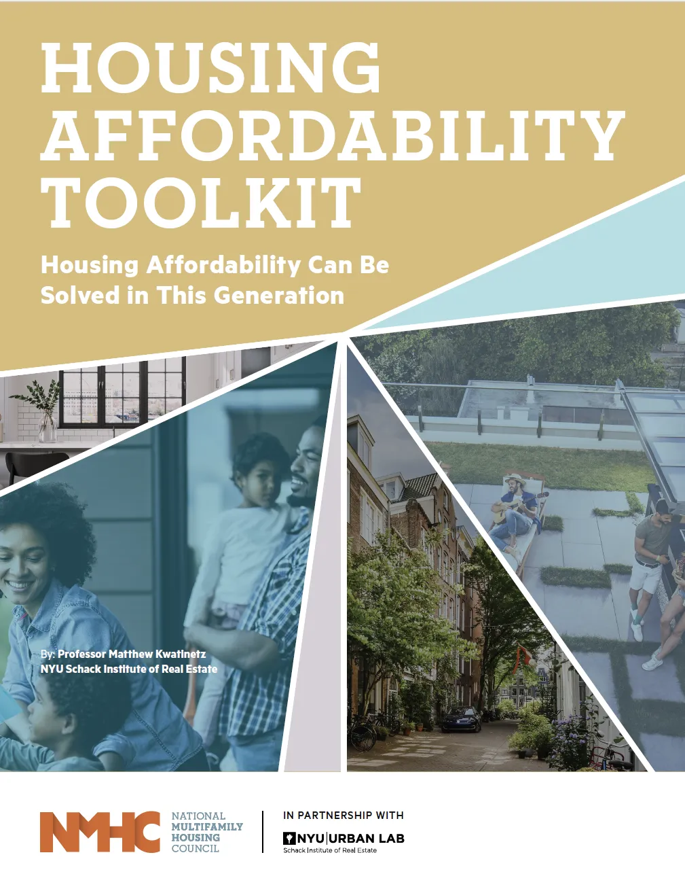
NMHC and NYU SPS Release Groundbreaking Housing Affordability Toolkit
Press Link: NMHC and NYU SPS Release Groundbreaking Housing Affordability Toolkit
Read moreExplore the Lab’s published news, research summaries, and urban development archive.
884 results

Press Link: NMHC and NYU SPS Release Groundbreaking Housing Affordability Toolkit
Read moreResearch from the NYU Urban Lab authored by Director Matthew Kwatinetz and published jointly with the National Multifamily Housing Council finds that America's rental…
Read moreResearch from NYU Urban Lab produced in partnership with the National Multifamily Housing Council forms the basis of the Housing Affordability Toolkit , a roadmap concluding that…
Read more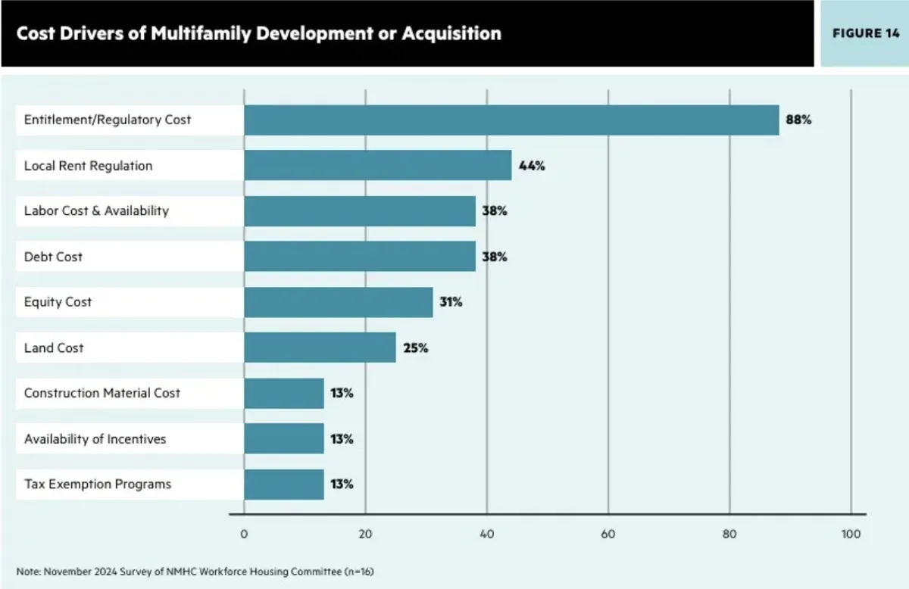
Research from NYU's Urban Lab (in partnership with the National Multifamily Housing Council) asserts that the U.S. housing affordability crisis is solvable within a generation of…
Read more
Austin’s transition is a story of one of the nation’s most affordable large rental markets to a city poised for renewed rent growth. After experiencing a pandemic-driven…
Read moreMomentum is rising behind transit oriented housing, a development approach that places residential units near major transit nodes such as commuter rail, subway, or bus corridors…
Read more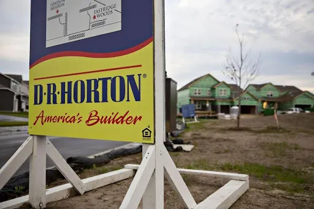
D.R. Horton, one of the largest homebuilders in the United States, is balancing profitability while responding to the growing demand for affordable housing. The company has…
Read more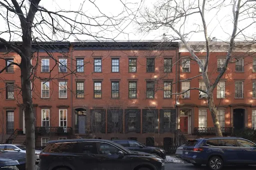
While fights over housing creation take up the public sphere in New York, the city has quietly been losing thousands of units. Bloomberg’s review of tax records shows that since…
Read moreWorkforce housing is beginning to emerge in locations that have not traditionally been associated with affordability-focused development. As housing costs continue to rise across…
Read moreThe critical shortage of starter homes across the United States is a structural barrier preventing residential development. Rising construction costs, regulatory constraints, and…
Read moreA 2026 report that evaluates factors such as housing costs, income levels, quality of life, and access to jobs. The study highlights a growing geographic shift in affordability,…
Read moreAfter three years of stagnation driven by high mortgage rates and near-frozen inventory, the U.S. housing market is showing its earliest credible signs of thawing: affordability…
Read moreA proposed commercial rent stabilization measure in New York City is drawing sharp divisions between small business advocates and the real estate industry. The Small Business Rent…
Read moreNew York City’s five public pension funds will invest $4 billion over four years—or $1 billion annually—into affordable housing through the NYC Housing Investment Initiative,…
Read more
In the race to answer the urgent question of what happens next in a warming world, governments, multilateral institutions ( read more ), and private actors are accelerating…
Read moreBrazil’s president met with key negotiators at the COP30 summit, aiming to reach a deal on contentious global climate issues, particularly those related to fossil fuels and…
Read moreNew York City voters approved Proposal 5, a charter amendment that shifts responsibility for the official City Map from five borough presidents and 8,000 paper maps to a single…
Read moreChina's dominance in low-cost solar panels, wind turbines, batteries, and electric vehicles is accelerating the adoption of clean energy in developing countries while the United…
Read moreHurricane Melissa demonstrated the resiliency of rooftop solar while exposing the vulnerability of Jamaica's centralized power grid: residents with solar panels, such as retired…
Read moreLos Angeles will double the capacity of the Donald C. Tillman Water Reclamation Plant to 45 million gallons per day by 2027, nearly twice its original size, reports Ian James for…
Read moreChina is constructing the world’s first underwater data center, a $226 million project powered almost entirely by offshore wind energy, reports Anna Lagos for Wired . By…
Read moreThe article explores the declining cost of green power generation thanks to increased manufacturing capacity in green technology across the planet, especially in China. The…
Read more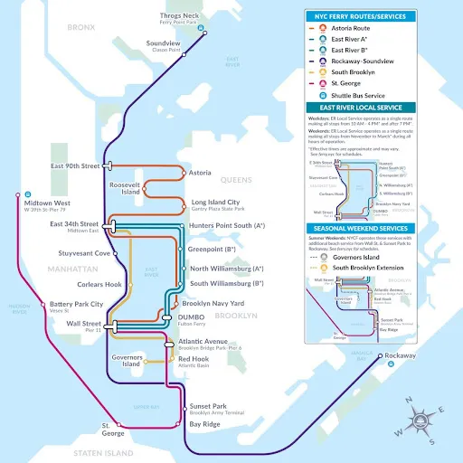
NYC Ferry is implementing a redesigned route map in December to speed up service, improve reliability, and strengthen inter-borough connections. Key updates include shifting the…
Read moreAt the 2025 C40 World Mayors Summit, the Global Methane Hub announced a $10 million investment to help cities in Latin America and the Caribbean reduce methane emissions from…
Read more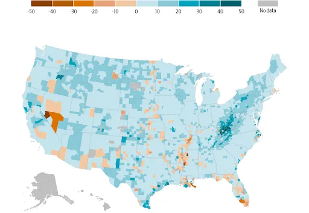
Federal flood maps, long used by banks, builders, and homeowners to gauge flood risk, are failing to capture millions of vulnerable properties across the United States. Many…
Read moreIn observance of World Cities Day, this article highlights the significant role cities play in the Amazon region. Despite progress, these cities remain among the poorest in their…
Read more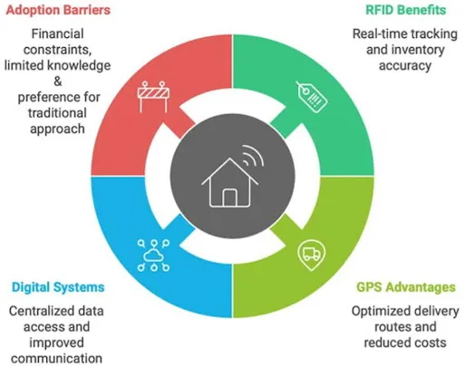
Created in December 2024, accepted in August 2025, and published in September 2025, this research presents a framework aimed at enhancing materials procurement for small and…
Read more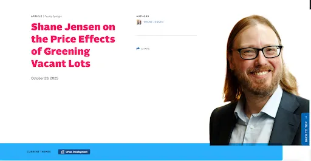
Philadelphia, a city long plagued by property abandonment, has been a pioneer for remediation programs, among which include “greening” vacant lots. Vacant lot “cleaning and…
Read moreSource: Urban Land Magazine Date Published: 10.21.2025 Link: Green Bank’s New Resilience Financing Tool in Suburban Maryland
Read moreThe construction of nuclear power plants in China proceeds at a breakneck pace. Between 2013 and 2020, 13 such plants came online; 33 additional facilities have construction…
Read moreWater is obviously an incredibly valuable resource. This article discusses the growing use of water and the water systems that are becoming increasingly overburdened and expensive…
Read moreIn the face of a Global AI Boom, where companies are expected to spend $375 billion on data centers this year alone, mounting protests over the lack of regulation, service…
Read moreSource: Urban Land Magazine Date Published: 10.17.2025 Link: Fugitive Emissions: Why Commercial Real Estate Can’t Ignore Refrigerants
Read moreBloomberg Philanthropies and C40 cities announced 26 finalists for the 2025 local leader awards, recognizing innovative climate actions that cut carbon emissions, improve health,…
Read more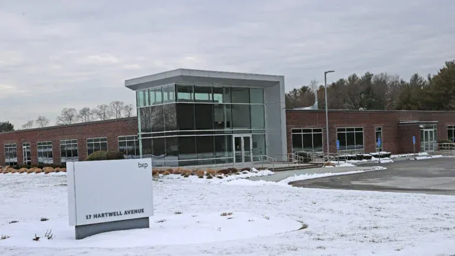
Lexington, Massachusetts
Read moreULI announced the eight District and National Councils chosen for the fifth cohort of its ULI Net Zero Imperative program, which aims to accelerate decarbonization in the built…
Read moreCentreville Bank Stadium in Pawtucket opened as Rhode Island F.C.’s new 10,500-seat home, part of a $132 million public–private deal requiring extensive mixed-use development,…
Read more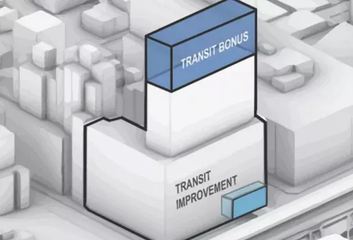
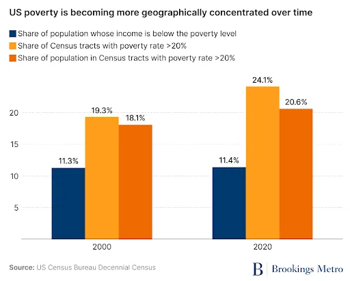
Mission Rock, a 28-acre waterfront redevelopment across from San Francisco’s Oracle Park, is transforming a former parking lot into a mixed-use neighborhood through a…
Read more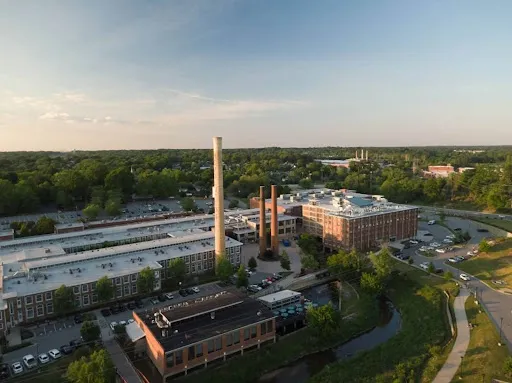
Community Development Financial Institutions (CDFIs) have faced major threats under the Trump administration, including mass firings, budget cuts, and halted certification…
Read morePlanetizen’s feature, inspired by Jeff Speck’s concept of the “Interesting Walk,” celebrates culture-led urbanism by showcasing how art, design, and human presence shape engaging…
Read moreOnce known primarily as a commercial corridor packed with office towers, Manhattan’s 42nd Street is now seeing a surge of office-to-residential conversions. Developers are…
Read moreExamining the Parisian rental market, this article assesses the impact of the rent control policy implemented in July 2019. Enacted as a response to a 13% increase in rent over a…
Read moreCities around the world are reimagining sports arenas as anchors for mixed-use, community-oriented districts that drive year-round urban revitalization. Instead of isolated,…
Read more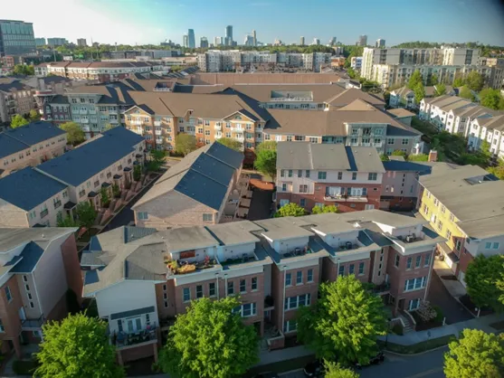
Crowdfunded real estate is emerging as a powerful tool for creating and preserving affordable housing by enabling communities to collectively invest in local properties. Enabled…
Read moreThe long-running battle over Pittsburgh’s rental registry highlights a national struggle between landlords and cities trying to improve housing quality and affordability. Rental…
Read moreA significant conflict has emerged around the Hyphen green hydrogen project in Namibia, which is a major Public/Private Development backed by the German firm Enertrag and the…
Read moreAshton Heights, a historic Arlington, Virginia neighborhood founded in 1919, demonstrates culture-led development through its official architectural guide codifying bungalows,…
Read more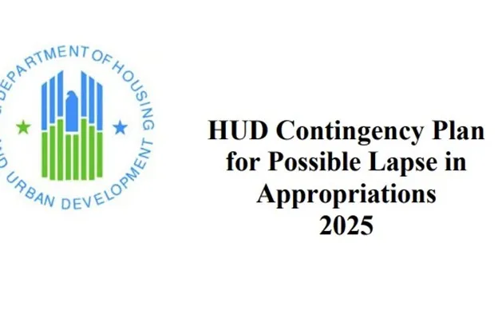
As of October 1, 2025, the federal government entered a shutdown due to a lapse in appropriations. HUD’s contingency plan keeps about 2,400 of its 6,100 employees working on…
Read more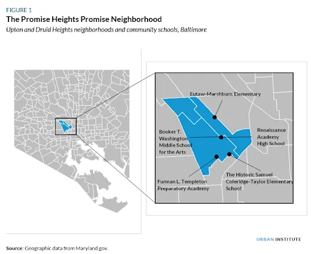
The Urban Institute’s seven-year evaluation of the Promise Heights Promise Neighborhood examines how a coordinated, place-based initiative can address systemic inequities in…
Read moreThis piece explains how New York City’s Midtown South rezoning aims to unlock thousands of apartments by modernizing land-use rules in a centrally located business district that…
Read moreThe Washington Post discusses how the Boundary Waters Canoe Area Wilderness (BWCAW) in Ely, Minnesota has been at the center of a national struggle between conservation and…
Read moreBarron’s says Fed governor Stephen Miran now argues the neutral real rate r* is near zero, which implies today’s fed-funds rate is tighter than the Fed thinks and should move…
Read moreRecycled plastic as architectural material
Read morePeople protesting pipelines.
Read more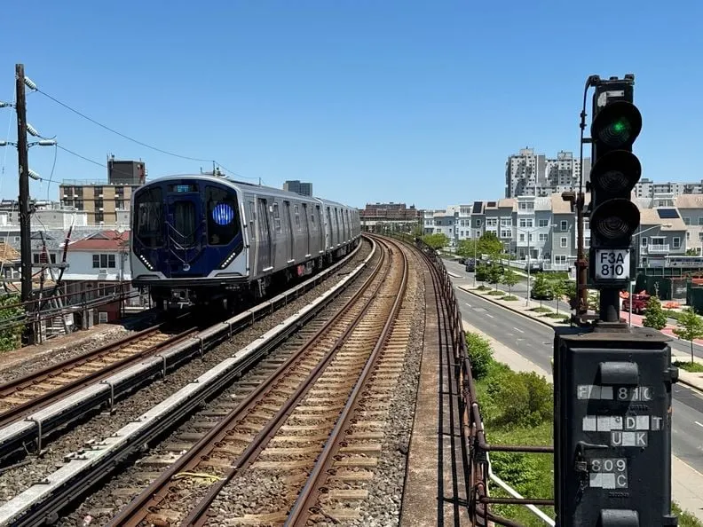
Electric vehicle chargers
Read more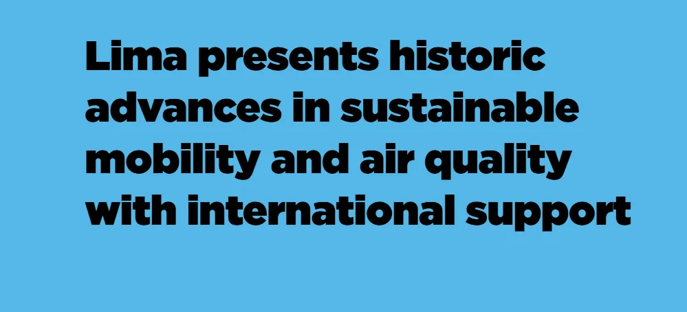
Lima Presents Historic Advances in Sustainable Mobility and Air Quality With International Support
Read more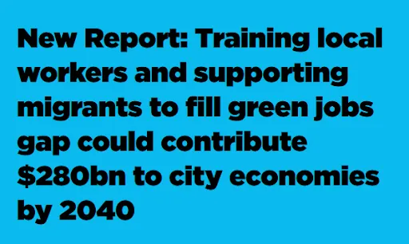
A new report from C40 Cities, the Climate Migration Council, and the Mayors Migration Council projects that by 2040, almost half of all jobs in construction, transport, and waste…
Read moreSan Francisco’s Market Street is undergoing a reimagining process led by ULI San Francisco, with proposals emphasizing culture-led development over conventional growth models.…
Read more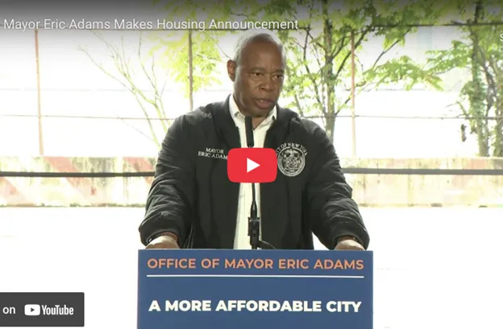
New York City Mayor Eric Adams has launched the “Affordable Fall” initiative, a series of announcements aimed at increasing housing affordability, by unveiling plans to redevelop…
Read moreThe City Council is set to vote on the Just Home project in the Bronx, which would convert a vacant building at Jacobi Hospital into 58 supportive apartments for medically frail…
Read more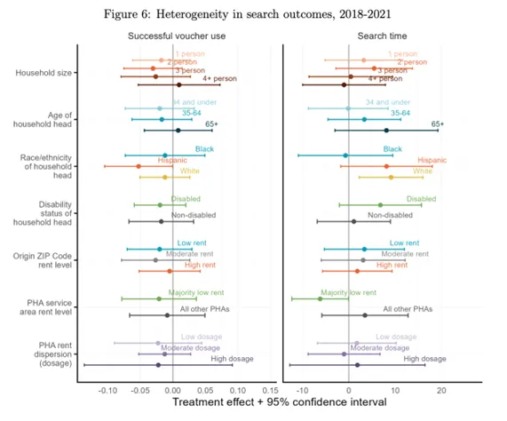
This paper evaluates the impact of HUD’s Small Area Fair Market Rent (SAFMR) policy, which sets voucher rent ceilings at the ZIP Code level rather than across entire metropolitan…
Read more
San Francisco is racing to meet its state-mandated goal of building 82,000 new housing units by 2031; however, economic and political hurdles threaten to slow progress. Recent…
Read moreThis article outlines four core principles that policymakers should adhere to when designing housing affordability policies. The author argues for (1) focusing on “missing middle”…
Read moreManhattan-based Avdoo is moving forward with two new residential projects in Gowanus, opting for smaller buildings that avoid the state’s 485-unit tax break wage mandate for…
Read morePublic restrooms, are often overlooked in urban planning, are vital indicators of civic health and inclusivity. Clean, safe, and well-maintained facilities signal care, dignity,…
Read moreThis article highlights UNESCO’s ongoing efforts to build resilient communities in Latin America and the Caribbean through sustainable tourism. The program focuses on integrating…
Read moreCongress has extended the Opportunity Zone (OZ) program beyond 2026, reinforcing its role in addressing the U.S. housing shortage by channeling private capital into economically…
Read moreCityLAB-UCLA's report evaluates the potential of California Community College (CCC) lands to provide affordable housing for students. Motivated by the severe lack of on-campus…
Read moreSan Diego is increasingly turning to factory-built housing as a way to tackle its housing crisis. These units can be completed in a fraction of the time and at a lower cost than…
Read moreThe D.C. Council has passed the “Rebalancing Expectations for Neighborhoods, Tenants and Landlords Act,” a sweeping new law reshaping rental housing rules and landlord-tenant…
Read moreThe Washington Post’s coverage of the recently approved $3.7 billion redevelopment of the RFK Stadium in D.C. highlights the multifaceted nature of large-scale public/private…
Read moreThis article talks about a partnership between NYCHA and Local 1 of the Bricklayers and Allied Craftworkers union to run a pre-training program that prepares candidates for union…
Read moreRecent data from Costa Rica show a striking uptick in renting among both low-income and high-income households—a sign that both affordability constraints and lifestyle preferences…
Read more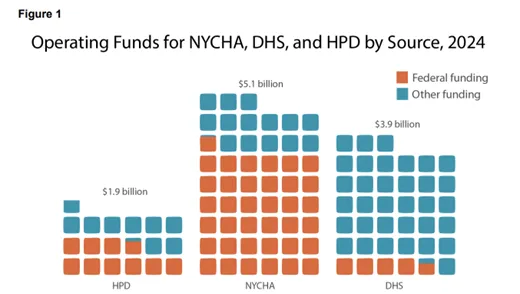
The NYU Furman Center’s testimony highlights the critical role federal funding plays in New York City’s housing and homelessness programs, totaling $7.2 billion annually,…
Read moreNew York City built and preserved more than 33,000 affordable housing units in fiscal year 2025, a 15% increase from the previous year, according to the mayor’s management report.…
Read moreThe Federal Reserve’s mid-September decision to cut short-term interest rates reverberates through mortgage markets and directly affects housing affordability, particularly in…
Read moreWith the decline of traditional news outlets, communities face growing “news deserts” that weaken civic life. Recognizing local news as a public good, some cities are…
Read moreThe Manhattan casino proposals by SL Green and Silverstein Properties were both rejected by neighborhood committees on Wednesday, bringing an abrupt end to the multibillion-dollar…
Read more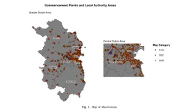
Examining housing construction in Dublin, the study focuses on two components of housing construction that traditionally face lags: activation, “the time from planning consent to…
Read moreThe leaders of the bipartisan Congressional Real Estate Caucus plan to introduce legislation encouraging government agencies to collaborate on addressing housing affordability.…
Read more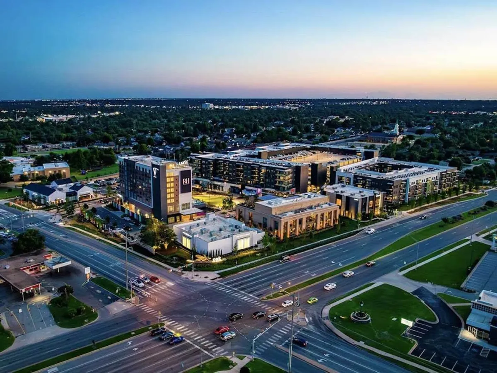
OAK is a 20-acre mixed-use development in Oklahoma City launched over a 15-year build process, and highlights the “key figures” that shaped its success. It discusses how the…
Read more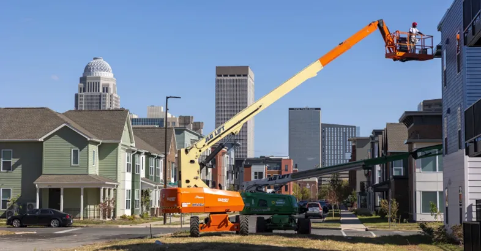
The One Big Beautiful Bill Act (OBBBA), passed in July, expanded the Low-Income Housing Tax Credit (LIHTC), the federal government’s main tool for financing affordable housing,…
Read more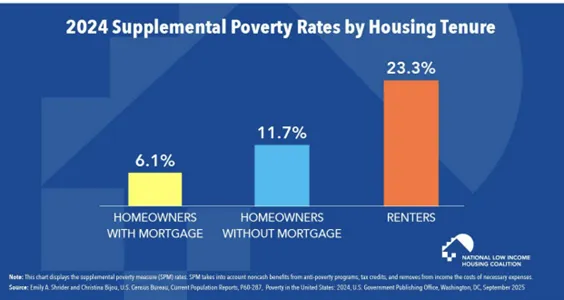
The September 15, 2025, NLIHC Memo warns that a potential federal Continuing Resolution would flat-fund housing programs, resulting in fewer Housing Choice Voucher (HCV) and…
Read moreKnowing that the current housing construction in California is “stagnating” (around 100,000 new units yearly), well behind the State production goal of 2.5 million units between…
Read moreDisability rights activists in the City of Chicago have organized a class action lawsuit against the city for its failure to comply with its own standards for care of sidewalks.…
Read morePatterson Houses in the Bronx has undergone a $500,000 renovation of its outdoor communal areas under the Green Space Connections program. With extensive input from residents, the…
Read moreThe Canadian government announced the creation of a new federal housing agency, Build Canada Homes, with C$13 billion in funding. The agency’s mission is to accelerate the…
Read moreUnder director Michelle Boisvenue-Fox, the Mesa County Library in Grand Junction, Colorado, has evolved to foster belonging, civic dialogue, and cross-cultural connection.…
Read moreThis academic study explores the potential of Compressed Adobe Bricks (CABs) as a pathway to more affordable and sustainable housing in Lagos, Nigeria. CABs are locally sourced,…
Read moreThe refurbished plaque was unveiled at the original Polo Grounds at an event attended by Willie Mays’ son, Michael Mays. It was a combined event with the NYPD and the Police…
Read moreThis article offers innovative solutions to reduce costs and accelerate development with reduced reliance on traditional options. These strategies are modular homes, converting…
Read moreManhattan and Brooklyn real estate are entering the fall 2025 season with unusual uncertainty. Traditionally quieter than the spring market, the fall sees a surge of listings…
Read more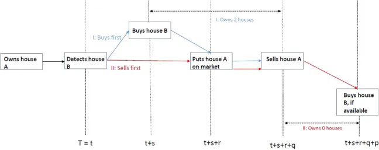
Using four Norwegian cities, Oslo, Bergen, Trondheim, and Stavanger as a case study, the research examines housing market data and public records to describe the relationship…
Read moreNew York’s 485-x affordable housing tax incentive program is having the unintended effect of driving developers to cap new projects at 99 units. The program offers tax breaks for…
Read moreSeveral major casino proposals in Manhattan, including those from SL Green, Silverstein Properties, and the Soloviev Group, were recently rejected, leaving developers uncertain…
Read more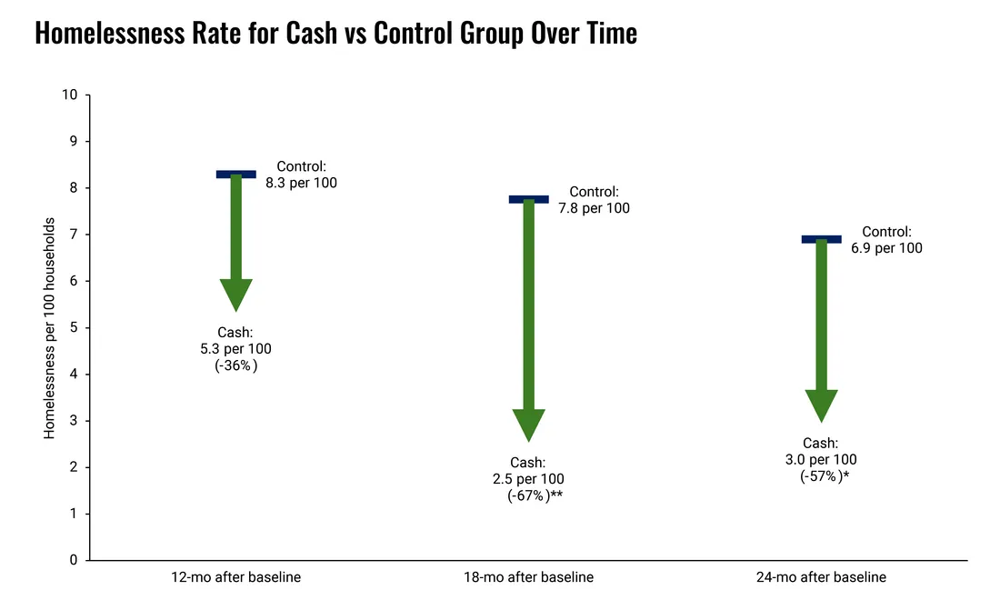
Reporting research from The Housing Initiative at Penn (University of Pennsylvania), the study compared the outcomes of two rental assistance programs in Philadelphia - a…
Read moreThe Urban Institute's "Black Family Thriving" initiative seeks to provide a comprehensive understanding of the Black middle class's experiences, moving beyond deficit-based…
Read moreIn 2022, California established its Mediaid program - CalAIM (California Advancing and Innovating Medi-Cal), now insuring 40% of state residents. Focusing on the intersection of…
Read more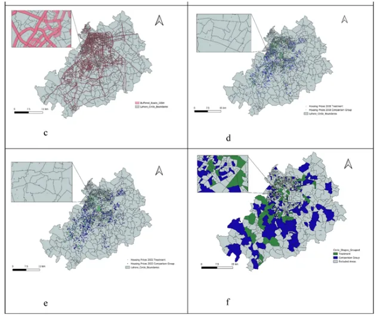
Researching the City of Lahore within Pakistan, a “highly populous developing country,” this article explores a 2020 zoning policy that allowed increased development. The upzoning…
Read more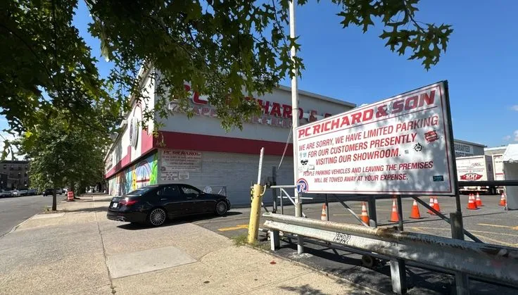
The massive Innovation QNS project in Astoria, which was supposed to bring 3,200 new apartments and over 1,400 affordable units, has fallen apart after Silverstein Properties…
Read moreIn the context of Trump’s recent approach to homelessness in D.C., policymakers should focus on providing affordable housing over incarceration. In the largest survey conducted of…
Read more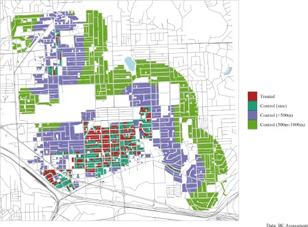
Looking at two cities in British Columbia, this research “highlights the limits of relaxing density and use restrictions alone to achieve new [housing] supply,” as a response to…
Read moreIn Chicago, where pro-housing legislation still faces headwinds, legislation was just passed eliminating parking minimums for new residential developments in Transit Oriented…
Read moreCountries racing to decarbonize their cities are rapidly expanding renewable energy, but grid stability is proving to be a critical bottleneck as shown by recent blackouts in…
Read moreEnerdrape is a new geothermal panel technology offering cities a novel way to leverage existing underground spaces like parking garages, subway tunnels, and basements into…
Read moreHousing ownership affordability in the U.S. has eroded to crisis levels, with the costs of homeownership soaring well beyond the reach of most households and undermining one of…
Read more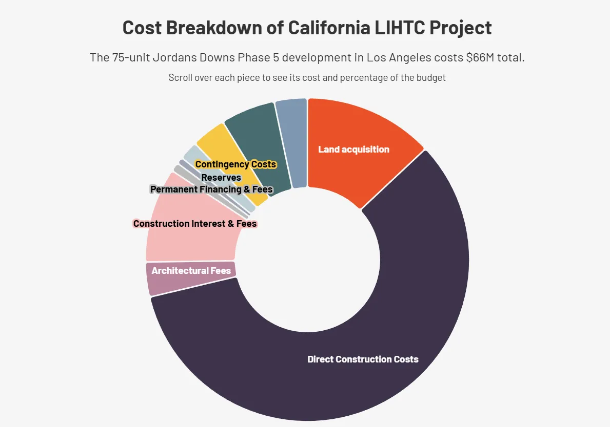
Government sponsored Affordable housing projects cost significantly more to build than market-rate housing due to how the Low-Income Housing Tax Credit (LIHTC) program is…
Read moreIn 2019, Google and Meta each pledged $1B and Apple $2.5B to address Silicon Valley’s housing shortage through loans to affordable-housing developers and by making company owned…
Read more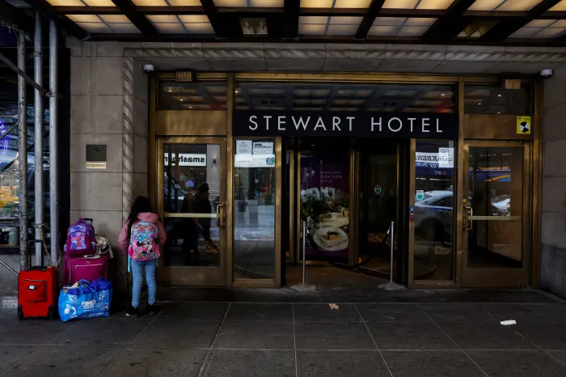
New York City developers are converting shuttered migrant hotels into housing, with at least a dozen properties already in progress and more than 1,100 apartments underway,…
Read moreThe pandemic-era “housebuilding boom” is coming to a close, where people fled to Atlanta, Austin, and Miami to escape from covid regulations, enjoy the sun, and expand their…
Read moreClimate change and global warming is expected to exacerbate malaria and predominantly affect Africa. By 2050, the Malaria Atlas Project (MAP) estimated malaria deaths will…
Read moreA consortium of mayors across England have committed to building 3,500 miles of a nationwide walking and cycling network across England. The plan promises safer, more connected…
Read moreNew Rochelle has become an example of how a city can push against Nimbyism to support supply side economics driving down rents. Forty minutes from midtown Manhattan, New Rochelle…
Read more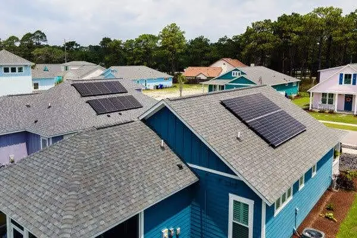
The Trump administration is planning to cancel $7 billion worth of federal grants which were supposed to go to groups helping hundreds of thousands of low-income families install…
Read morePreviously, triangular plots, crescent-shaped parcels, or narrow strips of land have been unusuable, prohibiting the development of desperately needed missing middle and denser…
Read moreDelays in approving high-rise residential projects brought on by new building safety regulations after the UK’s Grenfell fire tragedy are having a knockdown effect on housing…
Read moreThe ROAD to Housing Act of 2025 is a bipartisan housing reform bill led by Senators Tim Scott (R-SC) and Elizabeth Warren (D-MA), aimed at easing the United States’ housing…
Read moreThe Environmental Protection Agency announced plans to repeal the 2009 Obama-era endangerment finding for greenhouse gases, arguing that carbon dioxide is fundamentally different…
Read moreThe wind power projects on Scotland’s Isle of Lewis show how community support can be the key to unlocking renewable energy development. After decades of stalled progress, local…
Read more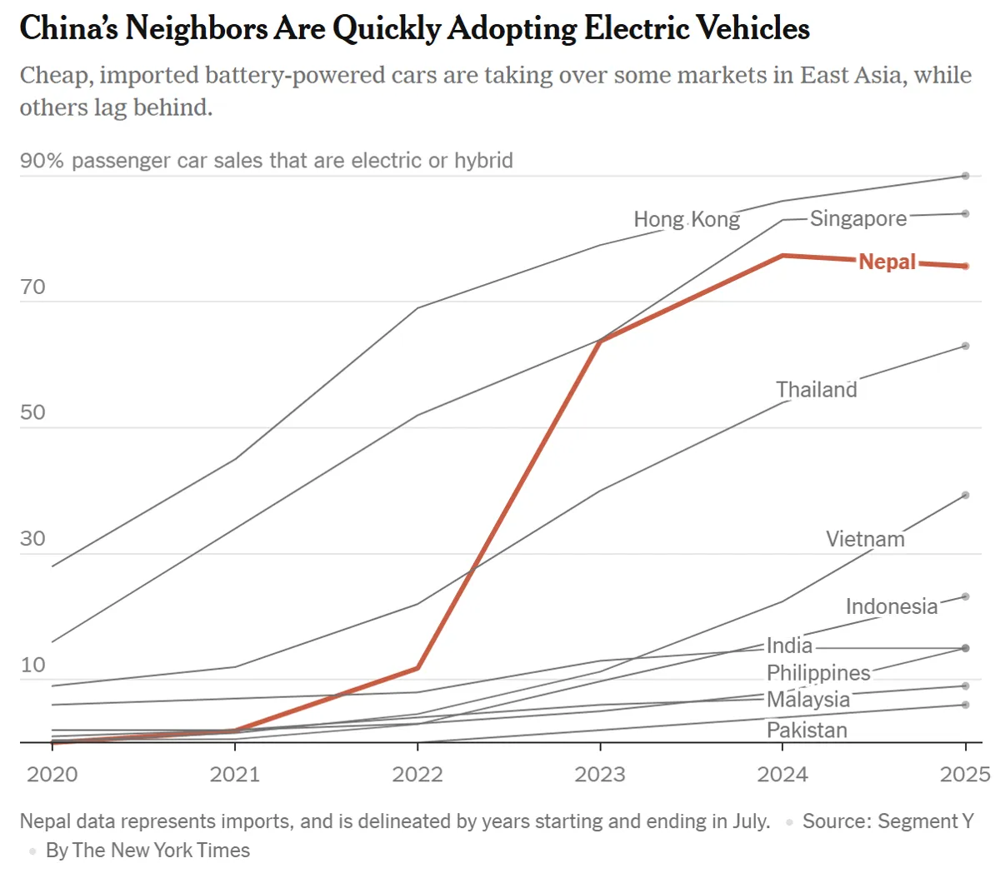
Nepal’s rapid shift to electric vehicles demonstrates how emerging economies can lead the transition toward net zero cities by leveraging clean energy and strong public policy.…
Read more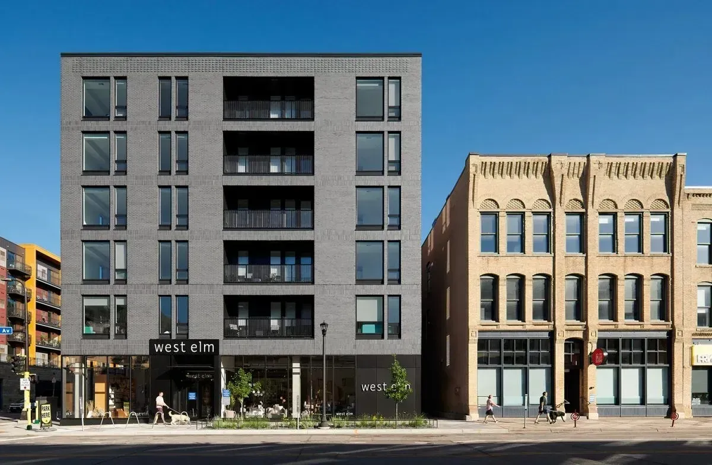
Law professors Chris Elmendorf and David Schleicher have recently argued that the pro-housing YIMBY movement should tap into broader support by connecting housing affordability to…
Read moreThere has been a reversal of key climate and clean energy policies following the repeal of major parts of the Inflation Reduction Act under the Trump administration’s “big…
Read moreIn a historic advisory opinion, the International Court of Justice (ICJ) declared that states have a legal duty under international law to protect people from climate change even…
Read moreThe US Department of Housing and Urban Development submitted its 19th biennial report on Worst Case Housing Needs detailing the extent of unmet needs for affordable rental housing…
Read moreA 450% rent hike at Carnegie House, one of the last affordable co-ops on Manhattan’s Billionaires’ Row, highlights the growing threat that expiring ground leases pose to housing…
Read moreA cost-effective yet underutilized strategy for addressing New York City's housing crisis: rehabilitating uninhabitable and vacant rent-stabilized apartments. Compared to new…
Read moreThe Trump administration wants to cut $27 billion from rental assistance programs like Section 8, and it's already shaking things up in affordable housing. Developers are putting…
Read moreNYC Mayor Eric Adams and the City Council disagree about what measures should be implemented to fight the housing crisis in the city. The former, mayor Adams, is in favor of…
Read more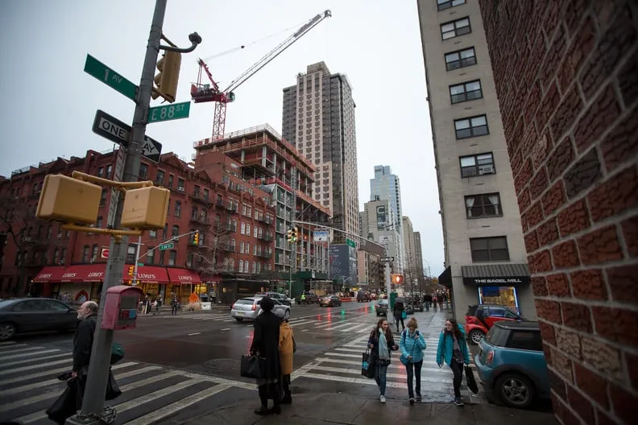
New ballot proposals in New York could reshape how affordable housing gets approved by speeding up the process and reducing the City Council’s power to block projects. One key…
Read moreIn Atlanta, a massive, mostly unused crater of land called the Gulch that once was the original center of the city. Tony Ressler, the owner of the NBA team the Atlanta Hawks…
Read more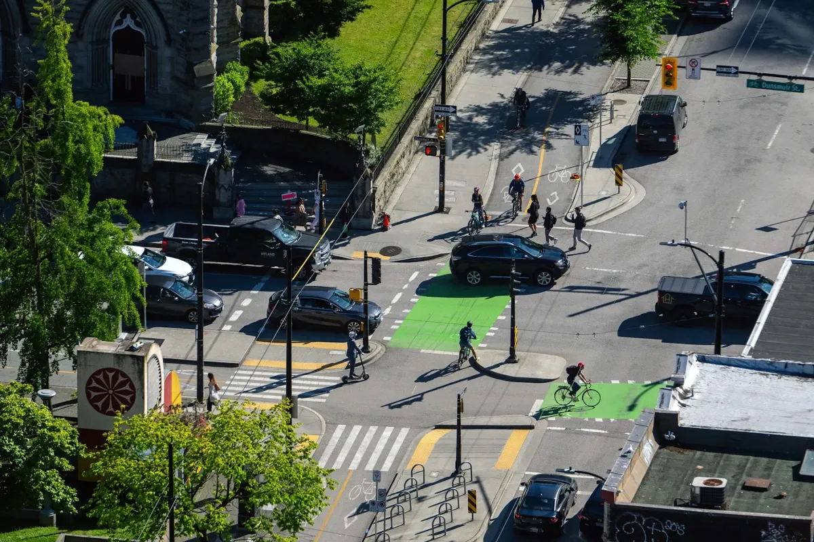
Cities across North America are increasingly adopting Dutch-style protected intersections—originally pioneered in the Netherlands—to enhance bike and pedestrian safety, reduce…
Read moreFICO’s CEO Will Lansing pushed back against the idea of letting mortgage lenders choose between different credit scoring models like FICO and VantageScore. He argues that…
Read moreThe One45 development in Harlem has officially received City Council approval after years of debate, clearing the way for a major mixed-use project that will bring nearly 1,000…
Read moreThe Eugene O’Neill Theater Center in Waterford, Connecticut, which has been for decades a crucial site for play development in America, is now at risk of having to close down due…
Read moreThe number of people sleeping outdoors in Los Angeles is reported to have dropped for the second year in a row. The decline was by 9.5 percent for Los Angeles County and 7.9…
Read moreArticle Summary: The Senate’s version of the megabill signals a major setback for the U.S. renewable energy transition, with the looming end of tax credits for large-scale wind,…
Read more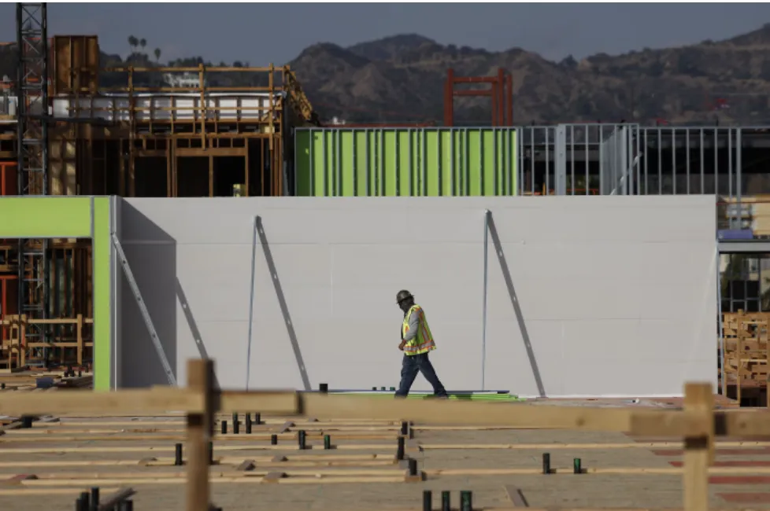
Article Summary: California’s rollback of key provisions in its landmark environmental review law marks a major shift in housing policy, prioritizing urban infill development to…
Read moreArticle Summary: Once widely believed to be the realm of easy development and naturally occurring affordable housing, Sun Belt cities like Phoenix, Miami, Atlanta, and Dallas are…
Read moreArticle Summary: Electric hydrofoil ferries are emerging as a promising solution for creating more sustainable, net-zero cities by offering fast, energy-efficient, and…
Read moreArticle Summary: Over the past decade “climate gentrification” has led to an influx of luxury development causing home prices to more than double in 24 NYC neighborhoods pushing…
Read moreArticle Summary: Office-to-residential conversions in Manhattan are becoming financially viable amid a glut of underutilized office buildings and soaring apartment demand. Roughly…
Read moreArticle Summary: Swiss startup Climeworks has now raised over $1 billion in equity funding, including a $162 million round led by BigPoint Holding and Partners Group to expand its…
Read more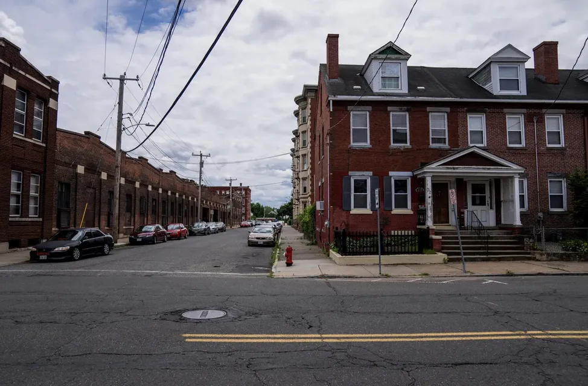
Article Summary: Massachusetts is shifting broker fee payments from renters to landlords, easing a major upfront cost that often equals one month’s rent. This reform is meant to…
Read moreArticle Summary: New York City’s plan to redevelop the Brooklyn Marine Terminal – the waterfront stretching from Cobble Hill to Red Hook – is a major public-private initiative…
Read moreArticle Summary: With home prices increasingly out of reach, especially for younger buyers, co-buying has emerged as a growing and unconventional financing strategy particularly…
Read moreArticle Summary: Tool lending programs in public libraries, like the one at Brooklyn’s Greenpoint branch, are strengthening local communities by making home improvement and repair…
Read moreArticle Summary: Nantucket, like many high-end second-home communities, is facing a severe affordability crisis as the island’s housing market booms, leaving its local workforce —…
Read moreArticle Summary: Saudi Arabia’s Public Investment Fund is investing heavily in a proposed skyscraper one block from Central Park, marking a broader return of foreign capital to…
Read more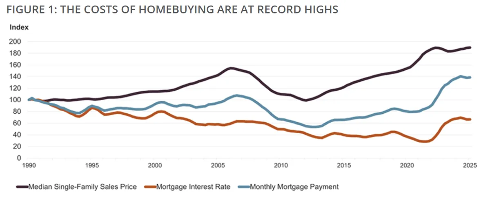
Housing affordability in the U.S. has reached crisis levels resulting in multiple record-breaking lows. Home prices climbed to a record median of $412,500 , while monthly mortgage…
Read moreHousing affordability crisis affecting middle-income households, such as those earning $75,000 annually. Despite representing the largest share of American households, they can…
Read more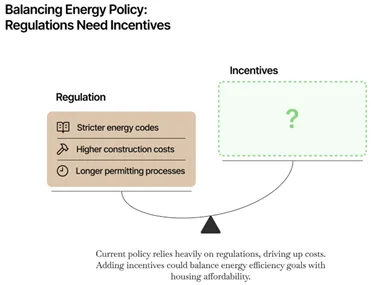
Increasing energy efficiency in buildings is crucial to reducing carbon emissions and mitigating climate change. Massachusetts' Green Communities Act of 2008, aiming for a 50%…
Read moreHousing experts Susanne Schindler and Samuel Stein critique America's binary rent-setting approach, which is either income-based or market-rate pricing, proposing Zurich's…
Read moreCity Council members Carmen De La Rosa and Lincoln Restler plan to introduce legislation next week to tighten New York City’s building emissions law, Local Law 97, by capping the…
Read moreThree city-owned sites on the Long Island City waterfront once set to host Amazon’s now-abandoned HQ2 may soon be redeveloped as part of Mayor Eric Adams’ broader rezoning plan…
Read moreA new city-led housing project in the Meatpacking District, planned to include at least half affordable units, is facing unexpected opposition especially over its height. The…
Read more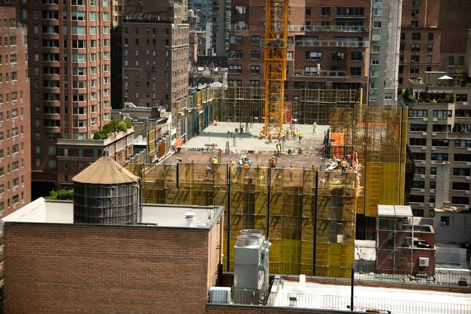
Mayor Eric Adams’ “City of Yes for Housing Opportunity” revamps the landmark development rights transfer program to better preserve historic buildings and boost nearby…
Read moreThe long-vacant Kingsbridge Armory in the Bronx is set for a major redevelopment, one of the largest adaptive reuse projects in the U.S. Approved by Mayor Eric Adams and Governor…
Read moreGovernor Kathy Hochul is responding to voter concerns with proposals on tax cuts, subway safety, and mental health ahead of re-election. But her leadership faces a bigger test:…
Read moreMayor Eric Adams’ City of Yes zoning reforms aim to spur 80,000 new homes, but high interest rates and inflation are expected to keep housing construction slow, especially for…
Read moreThe NYC Economic Development Corp. has commissioned its first disparity study of the commercial real estate industry to assess whether minority- and women-owned developers (MWBEs)…
Read more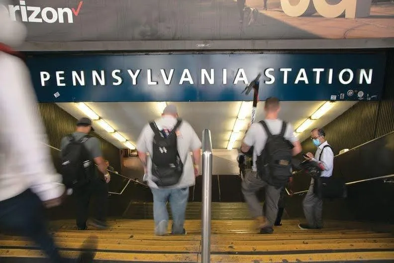
New York City is poised for a transformative 2025, with major megaprojects and policy rollouts on the horizon including the launch of congestion pricing, enforcement of the…
Read moreA new tower planned to be built for the World Trade Center campus has been cleared. The building will be 1,200 units and 400 of them will be set aside for low- and middle-income…
Read moreCommunity land trusts and conservation land trusts are looking to work together and collaborate on new ideas to preserve land while also creating access to affordable housing. In…
Read moreWashington, D.C. just welcomed its first office-to-housing conversion project. What was once the form office building of the U.S Peace Corp. is now a 163 unit apartment building.…
Read more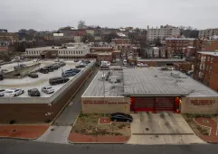
Despite pushback from Northern Washington residents, D.C officially approved a zoning change that allows hundreds of housing units to be built on city-owned property. 500…
Read more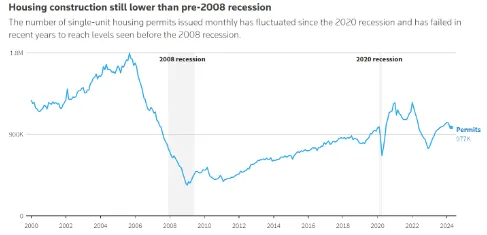
As candidates begin their campaign for election season many of them in states such as New York and Montana are hearing a common issue brought up by voters: house prices. According…
Read more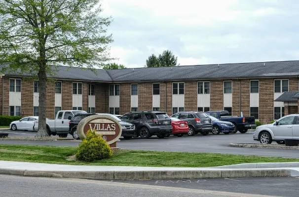
The housing affordability crisis in Bartholomew County has worsened over the past year, as reported by the National Low Income Housing Coalition's "Out of Reach" 2024 report. The…
Read moreElizabeth Street Garden, located on Elizabeth Street between Prince and Spring Streets, is a popular public area where New Yorkers can do a myriad of activities such as yoga and…
Read moreA new library in the Inwood neighborhood of Manhattan recently opened up a library with affordable housing included above in the same building. As affordable housing projects face…
Read moreFather Joe’s Villages, a nonprofit homeless services provider and housing developer in Southern California, has faced a significant rise in property insurance costs, with premiums…
Read moreAs the Biden administration looks for ways to increase the supply of affordable housing, Janet Yelle, the U.S. Treasury Secretary announced $100 million in new finance to address…
Read more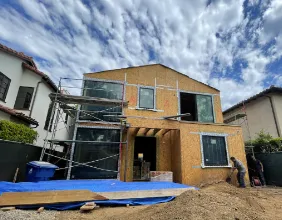
21 states and local governments have been awarded $85 million in housing funds as part of a new program to help them get rid of barriers to housing development as well as preserve…
Read moreAt the 2024 ULI/Charles H. Shaw Forum, experts discussed innovative state and local housing policies to address severe housing shortages across the U.S. Key trends included making…
Read moreAt the Furman Center's State of the City event, panelists discussed improving the federal housing voucher program, which aids over 5 million low-income Americans but faces…
Read more
The reopening of the Section 8 waitlist in New York City, which saw over 633,000 applicants, highlights the urgent need for rental assistance, but systemic issues persist due to…
Read moreThe article discusses the growing recognition of air-conditioning as a necessity rather than a luxury, highlighted by the Biden administration's new program to help public housing…
Read moreThe article highlights the rising number of older adults experiencing homelessness in New York City due to the affordable housing crisis. The number of single adults aged 65 and…
Read more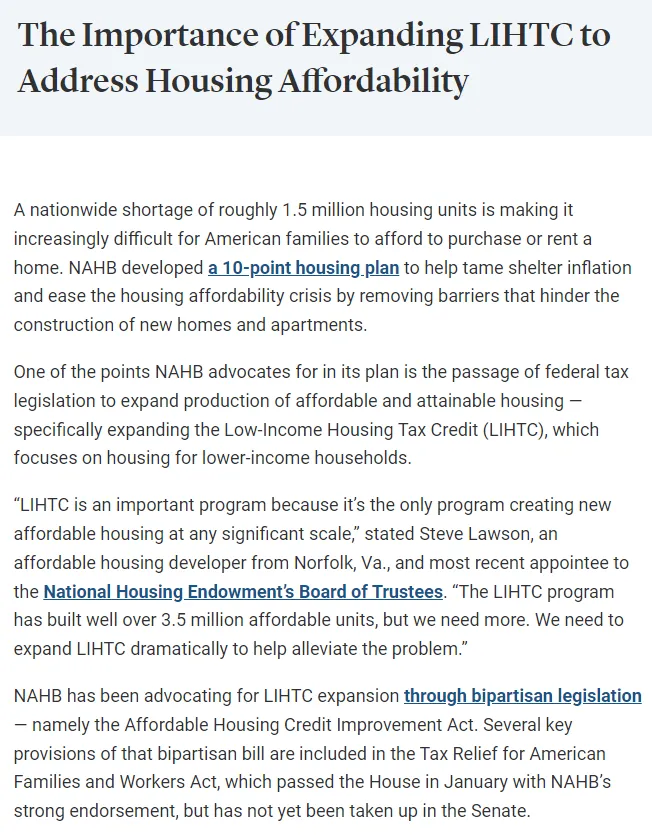
Bartholomew County's housing affordability crisis deepened over the past year, as highlighted in the National Low Income Housing Coalition's "Out of Reach" 2024 report. The hourly…
Read moreHigh interest rates have unexpectedly driven up U.S. home prices instead of causing a decline, with the median home value reaching a record $419,300 in May, up from $270,000…
Read more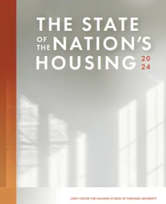
Both US homeowners and renters are facing rising housing costs. Elevated home prices and interest rates are pricing out potential buyers, while rents have surged, leading to…
Read more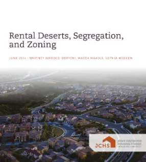
The report examines the concept of rental deserts, defined as neighborhoods where rental units make up less than 20% of the housing stock. It highlights how restrictive zoning and…
Read moreThe report highlights the short-term benefits of the Emergency Rental Assistance (ERA) program, which was established to support renters facing financial hardships due to the…
Read moreThe report discusses the efforts of Fannie Mae and Freddie Mac to enhance affordable housing through their Equitable Housing Finance Plans (EHFPs). It highlights the importance of…
Read moreThe Denver Housing to Health (H2H) Pay for Success project is a supportive housing initiative aimed at assisting individuals who are experiencing chronic homelessness and have…
Read moreThe Denver Housing to Health (H2H) project, launched in July 2022, is a seven-year initiative aimed at providing supportive housing for individuals experiencing homelessness who…
Read moreThe report discusses the Denver Housing to Health (H2H) Pay for Success project, which aims to provide supportive housing to people experiencing chronic homelessness, high arrest…
Read moreThe report highlights the ongoing affordable housing crisis in the United States, emphasizing the severe shortage of subsidized housing and rental assistance. Despite the critical…
Read moreRedevelopment of Public Housing: The report highlights the urgent need for innovative financing to address the deteriorating conditions of public housing in the U.S. Public…
Read moreThe report highlights Southern California’s severe housing affordability crisis, with over two-thirds of Los Angeles County renters spending at least 30% of their income on rent…
Read moreCommunity land trusts (CLTs) offer a promising solution to affordable housing challenges, particularly for Black homeowners facing displacement due to gentrification. Originating…
Read moreThe testimony discusses the potential of using innovative financing tools from the Department of Transportation’s Build America Bureau to create affordable housing near transit…
Read moreThe article discusses how climate change-induced disasters pose new risks to property values, homeowner security, and affordable housing preservation, especially in Black-majority…
Read moreThe Coronavirus State and Local Fiscal Recovery Funds (SLFRF) program, under the American Rescue Plan Act (ARPA), has provided significant investment in affordable housing, rental…
Read moreMissoula, Montana, recently passed a law restricting homeless encampments, reflecting a shift from its previous compassionate approach to homelessness. The new ordinance bans…
Read moreAmazon’s Housing Equity Fund (HEF) is part of a larger trend where tech giants like Microsoft, Apple, and Google pledge significant funds to address affordable housing shortages…
Read moreCharles Marohn, founder of Strong Towns, has long advocated for empowering local governments to address modern challenges effectively. He criticizes America's reliance on suburban…
Read moreAffordable housing developers are facing exponential increases in property insurance premiums, with some rates quadrupling. A noteworthy statistic is that nearly one-third of…
Read moreThe article cites data regarding the impact of increased construction and financing costs on housing development, as well as increased risk of equity investors withdrawing mid…
Read moreWeeks after Biden proposed several housing initiatives ahead of his State of the Union address, the administration is set to announce a new cap on how much rents can go up in…
Read moreAs the city of Boston grapples with an affordable housing shortage, triple houses are serving as a boon and solution. Many of them have been renovated with the help of…
Read moreAccording to the National Association of Home Builderss (NAHB) 2024 housing affordability metrics, an estimated 49% of households cannot afford a $250,000 home. The criteria is…
Read moreCities across the U.S. are increasingly recognizing the potential of zoning reform to address the affordable housing crisis. Experts like M. Nolan Gray and David Garcia emphasize…
Read moreAccess to affordable housing is critical for economic security and mobility, but high home prices and interest rates make homeownership increasingly unattainable, particularly for…
Read moreA national survey by Ipsos for The Pew Charitable Trusts in September 2023 shows broad support across income levels and between homeowners and renters for policies that increase…
Read moreAccess to affordable housing is crucial for economic security and mobility, yet high home prices and interest rates make homeownership increasingly difficult, especially for Black…
Read moreLocal governments are increasingly recognizing the potential of underutilized public assets to address affordable housing needs. For example, Boston owns 218 acres of…
Read moreThe article highlights how public-sector and nonprofit entities have replaced private investment in addressing housing affordability and have brought other innovative approaches…
Read moreHousing costs are a significant contributor to overall inflation, heavily influencing the Consumer Price Index (CPI) due to the economy-wide lack of affordable housing and high…
Read moreThe Workforce Housing Tax Credit (WFHTC) is proposed to address the housing affordability crisis for middle-income households by leveraging federal funds with private investment…
Read moreDecades of sprawl in Fresno and the Central San Joaquin Valley has led to significant land consumption, outpacing population growth, and has resulted in lower-density,…
Read moreThis report provides a detailed analysis of the use of community power building in Los Angeles as a means to attain housing justice. It underscores the escalating issue of housing…
Read moreThe article discusses the challenges cities face in housing affordability, emphasizing the need for publicly led development projects that integrate housing and transportation to…
Read moreThe 2022 report conducted by NMHC and NAHB found that an average of 40.6% of multifamily development costs can be attributed to meeting regulation requirements at all levels of…
Read moreThe article focuses on the need for comprehensive zoning changes to increase housing supply and address affordability, especially in neighborhoods zoned for single-family use. Los…
Read moreThe challenge of developing affordable housing for middle-income renters is complex due to limited financing options and the inability to use federal low-income housing tax…
Read moreMany cities marred by the affordable housing crisis are turning to Churches who are happily willing to alleviate the problem. Led by California, cities and states are increasingly…
Read moreIn 2019, D/C. area lawmakers said they needed to build at least 320,000 housing units in the next decade but they are falling behind. From 2020-2023, the Washington, D.C. area…
Read moreHousing affordability is a pressing issue for legislators in Prince George’s, a majority-Black suburb bordering D.C. Additionally, homelessness is also on the rise, increasing by…
Read moreThe article discusses the impact of North Dakota’s fracking boom on housing in Williams County, particularly in Williston. As oil production surged, the population doubled,…
Read moreThe Biden administration recently implemented new minimum energy standards for homes constructed with federal funding, aimed at enhancing efficiency in insulation, windows, HVAC…
Read moreThe paper explores the link between different housing submarkets through residential vacancy chains, which are a series of moves across housing units initiated by the construction…
Read moreThe report emphasizes the potential of Accessory Dwelling Units (ADUs) to address the affordable housing shortage in the U.S. It highlights California’s success in increasing ADU…
Read moreThe article highlights the severe shortage of affordable housing in the US, with only 34 affordable rental homes available for every 100 extremely low-income renters. Federal…
Read moreInnovative Subsidy Approach: The article discusses a new method being tested in Los Angeles where homeowners are encouraged to build and rent out ADUs to low-income households,…
Read moreThe Southeast Tabernacle Baptist Church in Washington D.C.'s Ward 8 is embarking on a transformative project known as First Street Village. Led by Pastor Donald Isaac and…
Read moreJersey City, part of New Jersey's Gold Coast, has undergone a remarkable transformation from its historic patchwork of districts and industrial remnants to a vibrant hub of…
Read moreThe University of California San Diego (UCSD) is tackling the challenge of housing affordability for college students with the Pepper Canyon West Living and Learning Neighborhood,…
Read moreThe text discusses the challenges and innovative solutions in addressing the affordable housing crisis in cities like Los Angeles, focusing on the efforts of Alliant Strategic…
Read moreAs New York officials conceive new ways to encourage and develop affordable housing, they are going retro and gleaning from the past. Of the proposals by state Democrats, one of…
Read moreAbundant New York, is a newly formed Super Pac by the pen New York, a nonprofit group formed in 2016 that advocates more development. The PAC is a more aggressive attempt by the…
Read moreHospitals and Affordable Housing Developers have unique partnerships as they both benefit from the creation of economical places to live. Healthcare systems are filling in gaps to…
Read moreThe U.S. Treasury will allow state and local governments to access unspent funds from the 350 billion State and Local Fiscal Recovery Fund if the money is used for housing…
Read moreMarket forces are steering major home construction companies to cure the size of homes - a shift to housing affordability. They are prioritizing narrower houses with fewer doors,…
Read moreAs congregations shrink, churches are looking to make use of their vacant land. In the D.C. region, faith-based institutions owned about 800 vacant parcels in 2019. Those parcels…
Read moreEconomists in the Biden administration are urging aggressive federal action to reduce housing costs for buyers and renters, addressing a key economic challenge as President Biden…
Read moreCalifornia's efforts to address its housing crisis through government-funded affordable housing have faced high costs and slow progress. SDS Capital Group, an investment firm, is…
Read moreCalifornia's 2021 law, SB9, aimed to alleviate the state's housing shortage by allowing single-family homeowners to subdivide their lots and build multiunit properties. However,…
Read moreChicago is facing a significant crisis with its office market, marked by high vacancy rates and declining property values, exacerbated by the pandemic, weakening demand, and…
Read morePresident Joe Biden and HUD Secretary Marcia Fudge released the FY25 budget request proposing $72.6 billion for affordable housing and homelessness programs, maintaining level…
Read moreThe report discusses the challenges and potential reforms for the The Housing Choice Voucher (HCV) Program, which helps over 2.3 million low-income families rent homes affordably.…
Read moreThe report evaluates the Chronic Homelessness Initiative (CHI) by Tipping Point Community, a $100 million investment aimed at halving chronic homelessness in San Francisco from…
Read moreAt a recent pro-housing conference called YIMBYtown in Austin, Texas, over 600 bipartisan activists, policy experts, academics, and elected officials gathered to discuss solutions…
Read moreAustin, Texas, once a booming housing market driven by an influx of well-paid tech workers, is now experiencing a significant downturn. Home prices and apartment rents in Austin…
Read moreThe Underserved Mortgage Markets Coalition is made up of 32 US affordable housing organizations with the goal of holding Fannie Mae and Freddie Mac - known as Government Sponsored…
Read moreThe decrease in overall rent growth is heavily attributable to an oversupply of high-end homes and apartments in cities with above average completions, including in Austin,…
Read moreMegan Parrish's solution to her mother Pat Dalrymple's housing challenges in Lake Arrowhead, California, exemplifies a growing trend: the construction of accessory dwelling units…
Read moreThe article critiques the Federal Housing Administration's (FHA) "Covid recovery" program, which aims to reduce mortgage payments and cover arrears for struggling borrowers.…
Read moreThis article criticizes California's zoning reforms for causing urban sprawl and stripping local control over land use, harming Berkeley's safety and culture. Mary Lee Noonan…
Read moreThe real estate landscape, particularly in multifamily housing, has undergone significant shifts over the past decade, driven largely by historically cheap debt and economic…
Read moreThe ULI Terwilliger Center for Housing has created a Home Attainability Index, designed to support ULI district councils, local municipalities, and members of the development…
Read moreThis study explores the imbalance in affordable housing availability for low-income renters within metropolitan areas, highlighting that conventional national or regional…
Read moreChris Edwards delivered critical remarks on the Low-Income Housing Tax Credit (LIHTC) at an American Enterprise Institute conference, emphasizing its complexity and inefficiency…
Read moreThis article emphasizes the effectiveness of the Housing First approach, which prioritizes providing permanent supportive housing to the homeless, followed by tailored services.…
Read moreThe Biden administration’s $35 billion program, the Railroad Rehabilitation and Improvement Financing program (RRIF), aims to convert underused office buildings into housing, but…
Read moreThe article discusses LA Mayor Karen Bass’s Executive Directive 1 (ED 1), which aims to expedite the approval process for 100% affordable housing projects by bypassing lengthy…
Read moreThe US Supreme Court has decided not to challenge New York’s long-standing rent-control system, rejecting two appeals from apartment-building owners. Justice Clarence Thomas…
Read moreThe article highlighted the transformation of Wellston, Missouri, following a contentious decision by HUD to demolish public housing units. However, the Mayor Nathaniel Griffin…
Read moreAs cities look for ways to create more affordable housing, one way is by rolling back single-family zoning laws - the city of Alexandria recently passed that plan. In Alexandria,…
Read moreIn "The Neighborhoods We Will Not Share," an article published by The New York Times, I highlight the Trump administration's proposed rule that threatens to significantly…
Read moreEvery year, Harvard University's Joint Center for Housing Studies comes out with a report on the rental housing market. The leitmotif for this year’s is the rise of…
Read moreState Rep. Steven Doan has introduced House Bill 102 in Kentucky, aiming to expand “middle housing” by reducing local zoning regulations. This bill is inspired by similar…
Read moreThe National Zoning Atlas, a mapping tool led by Cornell University professor Sara Bronin, aims to provide a neighborhood-level view of zoning codes set by local governments…
Read moreState Rep. Steven Doan has introduced House Bill 102 in Kentucky, aiming to expand “middle housing” by reducing local zoning regulations. This bill is inspired by similar…
Read moreThe article discusses Measure ULA, a new tax in Los Angeles aimed at funding affordable housing through a land transfer fee on real estate transactions over $5 million. Initially…
Read moreTheme parks like Universal Studios Florida and Walt Disney Co. are addressing the affordable housing crisis in Central Florida by becoming homebuilders. Universal is developing a…
Read moreThe bipartisan tax reform proposal in Congress aims to enhance the Low-Income Housing Tax Credit (LIHTC), a pivotal program for promoting affordable housing construction.…
Read moreThe Department of Housing Preservation and Development currently only uses money to subsidize projects that only contain affordable housing. However, New York City officials have…
Read moreMajor life insurance companies have been borrowing billions of dollars from Federal Home Loan Banks (FHLBs); money that is meant to increase affordable housing. Insurers have…
Read moreHoward University collaborates with Amazon’s Housing Equity Fund to convert 73 year-old Howard Manor into 80 affordable housing units. For dozens of years, the building housed…
Read moreThe article discusses Hennepin County’s successful efforts to reduce chronic homelessness in Minneapolis through a combination of funding, community engagement, and a…
Read moreThe article discusses the urgency of providing affordable housing for the rapidly growing populations of cost burdened older adults. It discusses several housing solutions: 1)…
Read moreThe new Biden administration rule mandates that landlords of federally subsidized housing must give tenants a 30-day notice before filing for eviction due to missed rent payments.…
Read moreHousing unaffordability in the U.S. is a complex issue shaped by a blend of regulatory, economic, and financial factors. Solving this challenge requires comprehensive solutions…
Read moreHousing policies, particularly through the Low-Income Housing Tax Credit (LIHTC) program, can significantly impact access to high-opportunity neighborhoods for low-income…
Read moreThe influx of short-term rentals in college towns driven by wealthy fans and real estate investors is exacerbating housing affordability issues, as seen in cities like Athens,…
Read moreHomelessness in America, exacerbated by a shortage of affordable housing, can be addressed through innovative solutions like converting single-family houses into rooming houses,…
Read moreThe article explores the profound impact of eviction on a predominantly Mexican immigrant community. Despite decades of establishment and contribution to the local economy through…
Read moreThe article discusses the nationwide success of the pro-housing YIMBY (Yes In My Backyard) movement in 2023. Zoning reforms were implemented in various states, including…
Read moreThe article discusses the severe conditions faced by low-income renters in the US, particularly in older, substandard housing units. Developer Marjy Stagmeier’s firm, TriStar Real…
Read moreThe article discusses recent ballot measures in Seattle, Santa Fe, and Boulder that aim to raise taxes to fund affordable housing and homelessness policies. In Seattle, the…
Read moreThe report examines the health impacts of Massachusetts Chapter 40B, a housing policy aimed at increasing affordable housing in higher-income areas. Using a…
Read moreAccessory Dwelling Units (ADUs) can address various housing challenges, including affordability by increasing housing supply without significantly altering neighborhood character.…
Read moreThe report highlights the urgent need for affordable housing for older adults, driven by the increasing population of those aged 65 and over. Housing costs are a significant…
Read moreNashville has an urgent need for affordable housing due to rapid population growth and rising housing costs. The report identifies significant potential for developing affordable…
Read moreThis article highlights the trend of declining NOI and restrained lending environment in the US. For rental housing development to continue to be attractive, market rents would…
Read moreThe report analyzes residential affordability in Atlanta’s five-county core area, highlighting the challenges of providing housing that is affordable to all income levels in this…
Read moreRemote work has triggered a surge in housing demand and reshaped preferences for housing locations. Given the heterogeneous nature of housing supply across regions and its…
Read moreA new report reveals that building housing in San Francisco takes longer and costs more than anywhere else in California, exacerbating the state's homelessness crisis. Governor…
Read moreThe Soloviev Group, vying for a casino license near the United Nations in Manhattan, has proposed Freedom Plaza, a project that includes 1,325 apartments, 40% of which would be…
Read moreThe article discusses Montana’s efforts to address its affordable housing crisis under Governor Greg Gianforte’s leadership. The state has implemented significant reforms,…
Read moreThe article discusses a proposal by the Chicago City Council to raise taxes on property sales over $1 million to fund affordable housing and homelessness services. The measure,…
Read moreThe Biden administration is promoting the conversion of empty office spaces into apartments to address high office vacancies and housing supply shortages. Significant financing…
Read moreGovernor Kathy Hochul signed a bill raising New York City’s Housing Development Corporation (HDC) debt limit by $1 billion, increasing it to $19 billion. This move aims to address…
Read moreThe article discusses the Affordable Housing Credit Improvement Act (AHCIA), which aims to strengthen the Low-Income Housing Tax Credit (LIHTC) to address the US housing crisis.…
Read moreMayor Eric Adams’ “City of Yes” proposal aims to address New York City’s housing affordability crisis by lifting zoning restrictions to permit 100,000 new homes over 15 years. The…
Read moreFollowing the devastating wildfire in Maui that killed at least 115 people and displaced 11,000 residents, immediate housing needs are being addressed by moving survivors from…
Read moreEarly childhood educators play an integral role in our society as they help educate future generations. However, a majority of them face the same problem: find an affordable place…
Read moreOne survey of agents by the National Association of Realtors found that 34% of their customers cited a lack of affordable housing on the market as the number one reason why they…
Read moreSurging insurance costs are presenting significant challenges for affordable housing developments reliant on the Low-Income Housing Tax Credit (LIHTC) market, according to…
Read moreThe Historically Black Neighborhoods Assembly, a chapter of the Louisville Tenants Union, is advocating for the Historically Black Neighborhoods Ordinance. This ordinance proposes…
Read moreIn Colorado's Rocky Mountain region, the idyllic mountain towns experience two peak seasons: a summer brimming with outdoor activities like rafting, hiking, and biking, and a…
Read moreThe article discusses the successful implementation of housing reforms in Montana, a state facing a severe housing supply problem due to a pandemic-influenced migration, spiking…
Read moreMinneapolis has become the first major US metropolitan area to see annual inflation fall below the Federal Reserve’s 2% target since inflation increased in 2021. This achievement…
Read moreA focus on zoning practice for small churches and houses of worship across the country could be an opportunity for affordable housing. Given the right circumstances, shrinking…
Read moreTraditionally housing advocates in the United States have long sought a fundamental overhaul of the country's federal housing policy to respond to increasing housing costs.
Read moreThe article discusses the challenges facing affordable housing projects due to high costs and rising interest rates. Developers are struggling to complete below-market rental…
Read moreThis article highlights the state of affordable housing in Richmond, Virginia. Public housing sites have endured years of substandard living conditions, including burst pipes and…
Read moreThis article addresses lawmakers' attempts in cities across the United States, exploring the conversion of vacant office spaces into residential units. The attempts are trying to…
Read moreIn Menlo Park, a wealthy town in Silicon Valley, a grassroots campaign successfully defeated Measure V, which would have blocked affordable housing for teachers and hindered…
Read moreIn February, Decatur, Georgia amended its zoning laws to allow duplexes, triplexes, and quadruplexes in single-family residential zones, aiming to address affordable housing…
Read moreThe article discusses the redevelopment of a public housing development, Holland Gardens in Jersey City, into a 631-unit mixed-income development that includes public housing,…
Read moreFair Housing Month underscores the ongoing need to ensure effective Fair Housing policies, as highlighted by a recent paper by Noah Kazis and Kathy O’Regan, titled "The Weakness…
Read moreThis report categorizes different zoning reforms that have been implemented around the US. Each category outlines the benefits of these different zoning techniques and approaches.…
Read moreIn early 2023, a team of designers and architects in Houston achieved a significant milestone in the emerging field of 3D-printed housing by using a large European-made printer to…
Read moreThis article addresses Detroit lawmakers who are contemplating a shift to a land value tax, aiming to alleviate homeowners' tax burdens and spur development on vacant properties.…
Read moreThe report explores how the 2021 Infrastructure Investment and Jobs Act (IIJA) can support affordable housing through transportation spending. It highlights the potential for…
Read moreThe report evaluates the financial distress and housing insecurity faced by renters during the COVID-19 pandemic. Using data from the US Census Bureau’s Household Pulse Survey,…
Read moreThis paper explores the dynamics of housing affordability through the lens of new market-rate housing construction and its impact on migration chains across neighborhoods.…
Read morePhiladelphia's Eviction Diversion Program (EDP), has helped families avoid homelessness through mediation facilitated by a coalition of city agencies, legal support groups, and…
Read moreThis article discusses how two developments in Houston are handling gentrification while still building community centered developments. The ZIP code 77003, just east of Downtown…
Read moreThe article examines California's staggering homelessness crisis that is particularly acute in Los Angeles. Over half of America’s homeless population resides in California, with…
Read moreThe report from the Harvard Joint Center for Housing Studies explores how digitalization is transforming various aspects of housing, including production, marketing, sales,…
Read moreThe Disaster Housing Recovery Coalition (DHRC), comprising 850 local, state, and national organizations, urges Congress to ensure equitable distribution of federal disaster…
Read moreThe reinstatement of the public camping ban in Austin, Texas, in May 2021 aimed to reduce visible homelessness but has exacerbated challenges due to insufficient shelter options.…
Read moreThe issue of housing affordability has increasingly become a critical concern across advanced economies, prompting governmental interventions aimed at alleviating housing cost…
Read moreGraham, founder of Mobile Loaves & Fishes, views the residents of Community First! Village not just as beneficiaries, but as neighbors in a unique enclave designed to uplift…
Read moreThe city of Kingston established precedent in New York by passing rent control and it ignited a wave of similar efforts across upstate New York. Under the New York housing policy,…
Read moreIn recent years, there has been a notable shift across the United States towards empowering young people with "lived experience" to shape policies and programs in the human…
Read moreThis article discusses challenges in distributing housing vouchers in Los Angeles, the Fed’s role in the housing crisis, and potential San Francisco affordable housing…
Read moreThis article explores rent control measures in New York, encampment criminalization in Los Angeles, and federal funding for homelessness prevention. Kingston, New York, was the…
Read moreThe implementation of St. Paul's strict rent control law, voted in by residents with the aim of limiting rent hikes to 3%, encountered immediate challenges and controversies.…
Read moreAs the new semester approaches, many college students are struggling to find affordable housing due to surging rental costs and increased demand for campus life post-pandemic.…
Read moreThis article discusses a city councilwoman who advocated for and successfully implemented updates to Chicago's heating and cooling ordinance. The new regulations now mandate that…
Read moreThis article explores tenants purchasing a building in D.C. Texas is expanding a homeless employment program, and Los Angeles homeless encampments spring up in the Mojave Desert.…
Read moreThis article explores an innovative solution that local non profit in Atlanta explored. CHRIS 180, the local non profit, identified a connection between aging seniors living alone…
Read moreThis articles explores trends with private equity homeownership increasing, HUD assisted housing having increasing evictions, and San Francisco increasing homelessness program…
Read moreThis article discusses landlords in St.Paul relying on increased costs to tenants through utility bills, Tennessee criminalizing homelessness, and Aspen, Colorado trying to slow…
Read moreThe article is an excerpt from Nolan Gray’s book, “Arbitrary Lines: How Zoning Broke the American City and How to Fix It.” The article and book discuss the enduring legacy of…
Read moreThe ULI Terwilliger Center for Housing has created a Home Attainability Index, designed to support ULI district councils, local municipalities, and members of the development…
Read moreNew York City's multifamily real estate market in 2024 is displaying resilience. There are expected rent increases of 2.2% higher than last year. In addition, there are…
Read moreThe article highlighted concerns about illegal convictions in Philadelphia and a HUD initiative to address homelessness around the country. The report by Community Legal Services…
Read moreIn New York City Rent Guidelines Board in New York City voted to increase rents for rent-regulated apartments by 3.25% for one-year leases and 5% for two-year leases starting…
Read moreAffordable housing extends beyond new construction, encompassing Naturally Occurring Affordable Housing (NOAH). NOAH is critical but increasingly at risk. In Chicago, for…
Read moreThis article takes a brief look at housing initiatives that happened in Seattle, San Francisco, and Los Angeles. Seattle launched a new homelessness transparency dashboard to…
Read moreThe article discusses the challenges faced by low-wage workers in accessing affordable housing close to their jobs in high-cost coastal regions like LA-Orange County compared to…
Read moreThe report highlights the significant rise in housing costs, with home prices and rents reaching record highs. The report notes that homeownership rates have increased,…
Read moreThe report highlights the short-term benefits of the Emergency Rental Assistance (ERA) program, which was established to support renters facing financial hardships due to the…
Read moreThe report by the National Association of Home Builders (NAHB) and the National Multifamily Housing Council (NMHC) reveals that regulations account for an average of 40.6% of…
Read moreIn a recent poll conducted by Data for Progress, a majority of New Yorkers expressed support for a "Good Cause" eviction bill aimed at restricting evictions except in cases of…
Read moreDetroit's City Council recently passed a law granting free legal aid to low-income residents facing eviction, funded by $6 million in COVID relief funds and an additional $4…
Read moreThe U.S. has a chronic shortage of reasonably-priced housing. Decades of policy and program intervention at federal, state, and local levels has not substantively alleviated this…
Read moreHUD's Office of Public and Indian Housing (PIH) has introduced Notice PIH 2022-11, inviting public housing agencies (PHAs) to apply for the new Moving to Work Demonstration (MTW)…
Read moreIn California, the implementation of SB-9, aimed at easing housing restrictions by allowing additional residential units on single-family parcels, has faced significant resistance…
Read moreApril Cotton's experience with halfway houses in Denver underscores systemic issues in reintegration support for formerly incarcerated individuals. After spending a decade in…
Read moreRecent developments in housing policies across various regions highlight significant legislative changes and studies. Delaware's state senate passed a bill to close a loophole…
Read moreThe article focuses on community land trusts (CLTs) in New York City and their efforts to secure increased funding and legislative support. CLTs are nonprofit organizations that…
Read moreThe Low-Income Housing Tax Credit (LIHTC) program has helped create over 3 million affordable housing units across the U.S., but as the affordability periods for these units…
Read moreThe article discusses how four cities are grappling with diverse challenges in homelessness, housing emergencies, legal aid strain, and innovative housing solutions. First, in Los…
Read moreHUD Secretary Marcia L. Fudge issued a directive on April 12, instructing the agency to conduct a comprehensive review of internal policies and procedures that may create barriers…
Read moreThe emergency housing voucher program, initially intended to alleviate housing challenges exacerbated by the pandemic, has faced significant hurdles nationwide, with only 20% of…
Read moreThe article highlights a couple’s interest in moving back to Evanston to take advantage of its new zoning laws allowing easier construction of Accessory Dwelling Units (ADUs).…
Read moreThe U.S. is facing a severe housing affordability crisis, where nearly half of renter households spend more than 30% of their income on rent and utilities. This traditional…
Read moreThe article explores Oakland's innovative approach to combating displacement exacerbated by climate policies through the Better Neighborhoods, Same Neighbors initiative. Funded by…
Read moreThe article highlights the Small Sites Program’s (SSP) ability to significantly impact preserving affordable housing and stabilizing communities facing eviction threats. The Small…
Read moreThe story of Kunia Village in Oahu, Hawaii, exemplifies a successful community revitalization effort spearheaded by two nonprofits, the Hawaii Agriculture Research Center (HARC)…
Read moreAfter four decades of resistance, Huntington, an affluent suburb on Long Island's northern shore, agreed to construct 146 subsidized homes, highlighting a broader housing crisis…
Read moreAfter a pandemic-induced slowdown, US rental demand surged in 2021, reducing vacancy rates and driving up rents. Higher-income renters, unable to buy homes due to high prices and…
Read moreThe report examines how renters managed their finances during the COVID-19 pandemic, particularly focusing on those who lost income through data from the Census Bureau’s Household…
Read moreThe article provides an in-depth look at Bergen County, New Jersey's approach to addressing homelessness, particularly through the lens of achieving "functional zero" for chronic…
Read moreIn January, volunteers in Bergen County, New Jersey will conduct the annual point in time count to assess the homeless population, despite challenges posed by COVID-19. The county…
Read moreIn Philadelphia, a devastating fire in a century-old brick house at 869 N. 23rd St. revealed the severe overcrowding crisis in the city's public housing system. The fire, which…
Read moreThe U.S. faces challenges such as an aging population, caregiver shortages, affordable housing deficits, and rising social isolation. A proposed solution is Magic (multi-ability,…
Read moreThe article discusses post pandemic traffic reform measures that four North America cities utilized. These cities used these tactics to improve the walkability of key…
Read moreThe article discusses the impact of zoning on housing affordability in the U.S., highlighting state governments’ efforts to counteract restrictive local zoning practices. It…
Read moreTwo national surveys conducted in early 2021 highlight that many landlords, especially smaller-scale ones, faced significant rent shortfalls, with some collecting less than 50% of…
Read moreIn 2015, Memphis received a $30 million Choice Neighborhoods grant to revitalize the South City area, replacing the old Foote Homes public housing with a new mixed-income…
Read moreAn analysis of U.S. Census Bureau data by Yardi's RentCafé reveals significant shifts in suburban housing demographics over the past decade. As of 2019, more than 100 suburbs…
Read moreThis report examines the impact of the COVID-19 pandemic on landlords’ rent collection and business practices, based on a survey of over 2,500 rental property owners in ten U.S.…
Read moreThis report highlights the ongoing housing inequalities exacerbated by the COVID-19 pandemic. Despite a strong recovery in home sales and rising homeownership rates, the limited…
Read moreThis study provides a comprehensive national census of Inclusionary Housing (IH) programs in the United States, documenting 1,019 local IH programs across 734 jurisdictions in 31…
Read moreThis study reveals that a new era of residential mobility began in the US following the Great Recession, marked by a significant decline in local mobility rates. This sharp…
Read moreDuring the COVID-19 pandemic, about half of all renters faced income losses, with people of color, low-income households, and younger renters being disproportionately affected.…
Read moreThe report focuses on the financial challenges faced by small landlords in Albany and Rochester, New York, during the pandemic. It highlights that rent collection significantly…
Read moreThe report analyzes Connecticut’s affordable and accessible housing landscape, highlighting the state’s declining population and the pressing need for housing that caters to…
Read moreIn the midst of a severe housing affordability housing crisis, nearly a quarter of renter households spend more than half of their income on rent, leaving insufficient funds for…
Read moreThe frequency of coastal floods in the United States has significantly increased in recent decades, with projections indicating further escalation due to rising sea levels. This…
Read moreThe State of the Nation’s Housing 2020 report highlights the worsening affordability for renters, with 20.4 million households paying more than 30% of their income on rent in…
Read moreDespite the challenges posed by COVID-19 and the recession, the housing industry has shown unexpected resilience in specific market segments, as discussed during the Housing…
Read moreThis report extensively examines the multifaceted housing challenges encountered by LGBT individuals across different life stages in the United States. It highlights pervasive…
Read moreThe report explores the rising demand for affordable multifamily housing amidst increasing construction and land costs. It highlights the challenges faced by developers,…
Read moreThe ULI Terwilliger Center for Housing has created a Home Attainability Index, designed to support ULI district councils, local municipalities, and members of the development…
Read moreDespite slowing demand and strong new construction, vacancy rates are at decades-long lows. This has pushed rents up faster than incomes, leading to a rise in cost-burdened…
Read moreRising housing costs relative to incomes are increasingly burdening U.S. families, with nearly half of renter households spending over 30% of their income on rent by 2017, meeting…
Read moreThe traditional approach to providing housing for lower-income Americans, primarily through government or nonprofit initiatives funded publicly, is facing challenges amid a…
Read moreThe literature on housing affordability has expanded significantly since Hulchanski's 1995 critique, which argued that the term lacks robustness and measurement validity. Despite…
Read moreThis commentary proposes a method to evaluate the Community Reinvestment Act (CRA) performance of large retail internet banks, both with and without physical branches, without…
Read moreThe report highlights the significant reduction in affordable rental housing across the United States from 1990 to 2017. During this period, the number of units renting for under…
Read moreTo effectively develop meaningful community participation, particularly in low-income and communities of color, it is essential to build on the foundational work established by…
Read moreAs detailed in our series on New York City’s public housing, NYCHA plays a crucial role in the city's diversity and vibrancy, having provided subsidized, income-based housing to…
Read moreThis research provides new insights into the residential mobility of low-income children in New York City’s gentrifying neighborhoods. Consistent with previous studies, we find no…
Read moreThe Rent Guidelines Board’s annual decisions on basic allowed rent adjustments are crucial to both the affordability and the long-term quality of New York City’s rent-stabilized…
Read moreAs New York City experiences shifting demographics and rising market rents, its public housing portfolio plays a crucial role in enhancing the economic and racial/ethnic diversity…
Read moreAs California's housing crisis deepens, upzoning policies are emerging as a key strategy to increase housing supply, especially in areas near transit and employment hubs. The…
Read moreDr. Sarah Mawhorter's working paper, the first in a series utilizing the Terner Center California Residential Land Use Survey, addresses California's severe housing shortfall.…
Read more"Backyard Housing Boom: New Markets for Affordable Housing and the Role of Digital Technology" by Alysia Bennett, Dana Cuff, and Gus Wendel discusses how new legislation in…
Read moreThe city of Austin, Texas, faces a significant homelessness challenge, estimated at about 6,000 individuals. In response, various initiatives are being pursued, as discussed at a…
Read moreSouth Florida's mayors are tackling congestion and housing affordability challenges head-on. Fort Lauderdale plans to create a "circulator" with updated one-way streets and…
Read moreIn an ideal world, research would reveal the effects of various decisions in designing a rent regulation program. However, in reality, there is limited rigorous research on modern…
Read moreThe National Low Income Housing Coalition (NLIHC) advocates for addressing the pressing issue of affordable housing in collaboration with the 116th Congress. Currently, only a…
Read moreThe Museum of Modern Art (MoMA), located in Midtown Manhattan, New York City, is one of the most influential and prestigious modern art museums in the world. Founded in 1929, MoMA…
Read moreThis article emphasizes the effectiveness of the Housing First approach, which prioritizes providing permanent supportive housing to the homeless, followed by tailored services.…
Read moreNew 42nd Street , originally formed in 1990 to oversee the redevelopment of seven neglected and historic theaters on 42nd Street between 7th and 8th Ave, was given 99-year leases…
Read moreThe article explores the growing trend of electrifying public transportation across the United States, spurred by significant funding from the 2021 infrastructure bill. It…
Read moreThe article examines the emerging trend of incorporating batteries into home appliances, enabling them to operate during power outages and potentially support the electrical grid.…
Read moreThe article explores an innovative approach to energy storage where hydrogen, produced using renewable energy sources like wind and solar, is stored in massive underground salt…
Read moreThe article discusses the growing interest in underground thermal energy networks, specifically geothermal energy systems, as a sustainable method for heating and cooling…
Read moreThe article reports on the Bezos Earth Fund's continued financial support for the Science Based Targets initiative (SBTi), which helps companies set environmental targets to…
Read moreThe article examines the increasing trend of linking CEO compensation to climate-related goals among S&P 500 companies, a practice that has more than doubled in the past two…
Read moreThis article discusses a trend among companies to reduce or alter the visibility of their diversity, equity, and inclusion (DEI) goals in their annual reports, particularly…
Read moreThe article explores how Islamic leaders in Indonesia, the world's largest Muslim-majority country, are integrating environmentalism with religious practices to combat climate…
Read moreThe article reports on a severe global coral bleaching event, the most extensive on record, driven by unusually high ocean temperatures. This event, identified by the National…
Read moreThe U.S. Interior Department is expected to reject a proposal for a 211-mile industrial road through Alaska's wilderness, intended to access a significant copper deposit. This…
Read moreThe article reports on a study revealing that significant land subsidence is occurring in 16% of China’s major cities, largely due to development and groundwater extraction. This…
Read moreThe article discusses the unusual heavy rainfall and subsequent flooding in Dubai, which scientists attribute to unusually hot ocean temperatures influenced by climate change and…
Read moreThe article discusses the significant financial shortfall in addressing climate change needs in developing countries, estimated at $1 trillion annually. It highlights ongoing…
Read moreScotland, once a leader in setting ambitious climate targets, has found its goal to reduce greenhouse gas emissions by 75% by 2030 unachievable. The Scottish government has…
Read moreThe article addresses a severe drought in Southern Africa, exacerbated by El Niño, that is devastating communities across several countries including Malawi, Zambia, and Zimbabwe.…
Read moreAl Gore, speaking at a leadership conference hosted by his Climate Reality Project, expressed optimism about the triumph of climate activism over political adversaries like former…
Read moreThe article discusses the challenges faced by the U.S. solar industry, particularly the impact of a surge in cheap solar panel imports from China, which has thwarted the Biden…
Read moreThe Biden administration has implemented new federal protections for millions of acres of Alaskan wilderness, blocking oil, gas, and mining operations in areas like the National…
Read moreThe Biden administration has introduced a new rule to prioritize conservation alongside other uses such as grazing, energy development, and mining on the nation's public lands,…
Read moreThe Greek government has introduced a new policy to safeguard 198 "untrodden beaches" by restricting commercial activities like bars and restaurants and banning large public…
Read moreChina's economy has shown better-than-expected growth, achieving a 5.3% increase in GDP in the first quarter of 2024, surpassing the government's target of around 5%. This growth…
Read moreIn 2019, Waco, Texas became a central hub for patent litigation in the United States, largely due to the efforts of federal judge Alan Albright, who actively attracted…
Read moreThe New York City Council approved zoning changes that pave the way for casino development in selected commercial and manufacturing areas of the city, while excluding residential…
Read moreThe New York state budget for fiscal year 2025, announced by Governor Kathy Hochul, encompasses a wide array of policies, notably including a significant housing deal aimed at…
Read moreIn New York, Governor Kathy Hochul has announced a new housing framework aiming to address the state's housing shortage through revised policies, despite facing criticism for…
Read moreNew York's first all-electric skyscraper, 505 State Street in Brooklyn, marks a significant shift towards sustainable urban development. Developed by Alloy Development, the…
Read moreThe Brooklyn Navy Yard Development Corporation is actively seeking innovative ideas to transform a large, vacant building within its industrial complex into a hub for climate…
Read moreInflation has been ubiquitous in all conversation related to the economy; it has now found itself in talks regarding rents. Shelter inflation - deemed by the government as its…
Read moreAs cities such as San Francisco and Chicago struggle to save and rebuild their once bustling downtowns, the city of St. Louis serves a dire warning. Cities further from either…
Read moreNew York State legislators are in negotiations over the state budget, which was due on April 1, 2024 but have stretched on for more than a week past the deadline due to…
Read moreA new super PAC called Abundant New York has been formed by housing advocates to support political candidates who favor increased housing development in New York. The group aims…
Read morehttps://www.wsj.com/articles/construction-firms-go-circular-as-they-try-to-meet-demand-for-greener-office-buildings-66bd4c90
Read moreThe article discusses a new initiative by the Biden administration aimed at revitalizing America's emerging offshore wind industry, which faced setbacks from inflation and supply…
Read moreSheila Watson, Deputy Director of the FIA Foundation, is at the forefront of global initiatives to promote safe and sustainable mobility. With a background as an economist and…
Read moreElectreon, an Israeli startup, is pioneering the development of wireless charging technology for electric vehicles (EVs), capable of charging vehicles as they drive. This…
Read moreDespite a general boom in corporate bond issuance, the market for sustainability-linked bonds, which adjust interest rates based on ESG goal achievement, has significantly…
Read moreThe article, "Private Developers Explore Affordable Housing Without Public Funds" by Christine Mai-Duc and Will Parker, published on March 16, 2024, by The Wall Street Journal,…
Read moreThe estimated cost of President Biden's clean-energy and climate agenda has doubled since the passage of the Inflation Reduction Act due to forecasters' expectations of its…
Read moreAt the World Economic Forum in Davos, Switzerland, many business leaders privately predict that Donald Trump will win the upcoming U.S. presidential election. While some express…
Read moreBank of America, previously praised for pledging not to finance new coal mines, coal-burning power plants, or Arctic drilling projects due to environmental concerns, has…
Read moreInvestors are withdrawing billions of dollars from funds that focus on environmental, social, and governance (E.S.G.) principles due to concerns over green-washing, political…
Read moreProgressives in New York are pushing for the creation of a government agency, the Social Housing Development Authority, to develop affordable housing using its own funds or money…
Read moreVia Verde, a subsidized housing development in the South Bronx, aimed to revolutionize affordable housing with its blend of sustainable design, health-conscious features, and…
Read moreThe European Court of Human Rights ruled that Switzerland violated its citizens' human rights by not taking sufficient action to combat climate change, marking the first time an…
Read moreThe recent extreme weather events in Los Angeles, including record rainfall and widespread mudslides, have prompted residents to acknowledge a new reality of increasingly severe…
Read moreDeadly disasters in Chile and California—wildfires ravaging Chile's forested hills and record-breaking rains triggering floods and mudslides in Southern California—highlight the…
Read moreAs Earth faces its hottest temperatures on record and struggles to mitigate climate change, scientists are exploring an unconventional solution: deploying a giant sunshade in…
Read moreThe rapid expansion of solar energy projects presents both opportunities and challenges for wildlife conservation. While solar farms can help combat climate change, they also…
Read moreFarmers' protests across Europe have prompted policymakers to backtrack on ambitious agricultural regulations aimed at reducing greenhouse gas emissions. European Commission…
Read moreGlobal temperatures continued to rise in January 2024, marking the eighth consecutive month of record-breaking warmth. The European Union's Copernicus Climate Change Service…
Read moreScientists studying centuries-old sponges in the Caribbean have uncovered evidence suggesting that global warming since the industrial age has been more severe than previously…
Read moreRecent data released by the European Union climate monitor indicates that the global average temperature over the past 12 months has exceeded 1.5 degrees Celsius above…
Read moreNew Jersey has filed a lawsuit against New York's congestion pricing program, arguing that it lacks sufficient consideration of the environmental impacts on neighboring states…
Read moreLuxury train travel in Japan offers a unique way to experience the country's culture and countryside while enjoying top-notch service and accommodations. The Seven Stars luxury…
Read moreJournalist Hiroko Tabuchi embarked on a cross-country train journey from New York to Stanford University, aiming to reduce her carbon footprint compared to flying. However, she…
Read moreAaron Peskin, president of the San Francisco Board of Supervisors, is entering the mayoral race as a progressive challenger to Mayor London Breed. While previous contenders have…
Read moreShohei Ohtani's arrival as a two-way superstar for the Los Angeles Dodgers has stirred excitement among fans, including Japanese Americans who see him as a unifying figure amid…
Read moreThe acceptance of graffiti as a form of art has transformed once-overlooked neighborhoods into trendy destinations, attracting developers, businesses, and brands seeking to…
Read moreJulio Florencio Teo Gomez, a carpenter from Guatemala City, was a day laborer in Long Island's East End. Despite finding work during the landscaping season, he struggled in the…
Read moreNegotiations for a housing deal in New York State are underway, aiming to address the housing crisis. Three main factions, representing tenants, landlords, and construction…
Read moreA recent report from the Mayor's Office of Climate & Environmental Justice in New York City reveals the disproportionate environmental burdens faced by low-income communities of…
Read more
Efforts to engineer solutions to combat climate change are gaining momentum, with projects ranging from direct air capture plants to solar radiation modification trials. These…
Read moreEfforts to engineer the Earth's atmosphere through geoengineering technologies are gaining traction, driven by worsening climate change and insufficient reductions in greenhouse…
Read moreIceland serves as a glimpse into the future regarding clean energy, climate impacts, and carbon capture:
Read moreScientists conducted the first outdoor test in the United States of technology aimed at brightening clouds to reflect sunlight and temporarily cool the planet. This test,…
Read moreThe YIMBY (Yes In My Backyard) movement, traditionally associated with liberal urban areas, is now gaining traction across ideological lines, with both Democrats and Republicans…
Read moreHealth care systems and affordable housing developers are increasingly collaborating to address community health and housing needs. Projects like HC3 in New Orleans demonstrate…
Read moreThe Export-Import Bank of the United States (ExIm) approved $500 million in financing for an oil and gas project in Bahrain, despite criticism that it contradicts President…
Read moreThe organizers of the Paris Olympics are implementing various measures to reduce greenhouse gas emissions and combat climate change during the event. They aim to cut emissions by…
Read moreA recent study published in Nature reveals that oil and gas producers in major fields across the United States may be emitting three times more methane gas than official…
Read moreDr. Jeremy Freeman discusses the growing momentum around solar geoengineering as a potential solution to combat climate change. Despite once being taboo, the idea of deliberately…
Read moreA federal court has temporarily halted new Securities Exchange Commission (SEC) rules requiring public companies to disclose more about their climate change-related business…
Read moreBrazil faces a significant dilemma as its state-owned oil company, Petrobras, plans to become the world's third-largest oil producer by 2030, despite the country's commitments to…
Read moreAdam Met, a member of the pop band AJR, has proposed a novel approach to expedite the development of wind and solar projects in the United States: utilizing state and federal…
Read moreThe demand for electricity in the United States, which had remained stable for two decades, is now surging due to factors such as the proliferation of data centers, a resurgence…
Read moreThe recent subway shooting in Brooklyn has intensified New Yorkers' concerns about safety underground, with some questioning the effectiveness of increased law enforcement…
Read moreActor Ed Begley Jr., known for his advocacy of environmentalism, continued his tradition of taking public transportation to the Oscars this year, accompanied by his daughter…
Read moreGovernor Kathy Hochul's deployment of 1,000 National Guard members and State Police to patrol New York City's subway system aims to address public safety concerns, particularly…
Read more
Governor Kathy Hochul's announcement to deploy National Guard soldiers and State Police troopers in New York City's subway system has elicited mixed reactions from commuters.…
Read moreThe number of cyclist fatalities in New York City reached a 24-year high in 2023, with most deaths involving electric bikes (e-bikes), which have become increasingly common on…
Read moreGovernor Kathy Hochul's decision to deploy hundreds of National Guard members and state police to conduct bag checks in New York City's subway system has raised questions about…
Read moreGovernor Kathy Hochul's decision to deploy the National Guard and State Police to the New York City subway system faced immediate and widespread criticism from various quarters.…
Read moreGovernor Kathy Hochul announced the deployment of 1,000 National Guard soldiers and State Police officers to patrol New York City subway platforms and conduct bag checks in…
Read moreGovernor Kathy Hochul's decision to deploy National Guard members, State Police, and additional officers to patrol New York City subway stations, assisting with bag searches,…
Read moreTransit officials held final public hearings on New York City's congestion-pricing plan, aiming to implement it as early as this spring. Critics voiced concerns about financial…
Read moreThe Stevenson Square housing development in Soundview, costing $1 billion, broke ground on its first phase, including buildings four, five, and six, totaling $125.5 million.…
Read moreChina has asserted its dominance in the global solar energy industry, surpassing the United States in installations and reducing panel prices. With plans to accelerate solar panel…
Read moreThe US offshore wind sector is experiencing challenges amid high interest rates, inflation, and supply chain disruptions, leading to a "fundamental reset" in the industry. Despite…
Read moreJohn Kerry, America's former top climate diplomat, reflects on the progress and challenges in addressing climate change during his tenure. He acknowledges the significant strides…
Read moreDuring his State of the Union address, President Biden emphasized the urgency of addressing the climate crisis, contrasting his approach with that of former President Trump. He…
Read moreThe U.S. Securities and Exchange Commission (S.E.C.) is expected to release weaker climate disclosure rules than originally proposed due to intense corporate lobbying and…
Read morePresident Biden is set to emphasize his administration's climate achievements in his upcoming State of the Union address, aiming to highlight the stark contrast between his…
Read moreThe Securities and Exchange Commission (S.E.C.) approved new rules regarding the disclosure of climate risks by public companies, but the final version is considerably weaker than…
Read moreA recent analysis of temperature data from hundreds of locations worldwide reveals that this winter was unusually warm for half the world's population, with climate change playing…
Read moreA recent United Nations report highlights how global warming disproportionately affects women-led households in low- and middle-income countries, exacerbating existing social…
Read moreNew York state leaders are grappling with a housing crisis by proposing a mix of new and old ideas. Among them is the revival of a 1950s program, Mitchell-Lama, which aimed to…
Read moreThe article explores the burgeoning interest in cryptocurrency mining in Africa, driven by the continent's rich renewable energy resources and the quest for low-cost electricity.…
Read moreUber has entered a pioneering partnership with Revel to utilize the latter's electric vehicle (EV) charging stations across New York City at discounted rates, marking a…
Read moreThe New York City Taxi and Limousine Commission (TLC) has announced a halt in the issuance of new licenses for electric for-hire vehicles (EVs) after a surge in applications led…
Read moreThe City of Yes for Economic Opportunity plan, led by Mayor Eric Adams, aims to significantly reform New York City's zoning laws to foster economic development by easing…
Read moreThe Adams administration's proposal to rezone 42 blocks of Midtown's outdated industrial zones into mixed-use spaces is set to create around 4,000 new homes, of which up to 1,110…
Read moreThe Adams administration in New York City is collaborating with the Building and Construction Trades Council and Cirrus Real Estate Partners to launch a fund exceeding $400…
Read moreThe development projects led by architect Fernanda Canales and facilitated through the Programa de Mejoramiento Urbano (P.M.U.) have had a transformative impact on under-resourced…
Read moreThe House passed the Atomic Energy Advancement Act in a bipartisan vote, signaling broad political support for nuclear power's role in energy generation. The bill aims to…
Read moreA new report indicates that the pressure for companies to reduce their carbon footprint is primarily driven by their own corporate boards rather than external factors like…
Read moreThe article explores how investment managers are navigating the demand for carbon credits within forestland investments. They meticulously evaluate trees to decide whether to use…
Read moreIndustrial companies are actively seeking alternatives to fossil fuels for critical processes like steelmaking, cement production, and chemical manufacturing, driven by the…
Read moreIn 2023, renewable energy made significant strides in the United States, supplying nearly a quarter (about 25%) of the nation's electricity demand. This growth was supported by…
Read moreThe Census Bureau's data reveals that weather-related disasters displaced approximately 2.5 million people in the United States in 2023. This highlights the growing urgency to…
Read moreThe rise of index fund investing has led to a shift in shareholder democracy, with large fund companies like BlackRock, Vanguard, and State Street holding significant power in…
Read moreThe expiration of the tax exemption program known as 421a in 2022 has sparked debates over its replacement, particularly with the introduction of a new program called 485x. The…
Read moreA bipartisan group of senators, including Jon Ossoff and Raphael Warnock from Georgia, are urging President Biden to strengthen tariffs on Chinese solar panels to prevent the…
Read moreFEMA announced it will start to pay for the installation of solar panels on schools, hospitals and other public buildings rebuilt after national disasters. This will allow the…
Read moreThe article discusses efforts on Nantucket, Massachusetts, to preserve historic homes from being gutted and remodeled by attaching preservation restrictions to property deeds.…
Read moreAs the use of technology increases, the need for data centers follows suit. In 2022 data centers used between 240 and 500 terawatt-hours of electricity, roughly 1-2% of that…
Read moreIn his State of the City speech, New York City Mayor Eric Adams highlighted his administration's progress on public safety and economic recovery, while promising modest action on…
Read moreThe article discusses a $150 million federal grant awarded to New York for the development of a connector road alongside the Cross Bronx Expressway, aiming to repair the highway's…
Read moreThe article discusses a significant $1.2 billion project by Con Edison to upgrade the electric grid capacity in southeast Queens, New York, aimed at accommodating the area's…
Read moreThe article details the recent financial challenges facing New York's offshore wind industry, highlighting nearly $2 billion in losses by developers crucial to achieving the…
Read moreThe article discusses New York State's consideration of a regional procurement strategy for offshore wind projects in collaboration with New Jersey and potentially other nearby…
Read moreThe article provides an overview of New York's burgeoning offshore wind industry, crucial to the state's ambitious climate goals set by the Climate Leadership and Community…
Read moreThe article outlines a plan to potentially replace a Brooklyn hospital at SUNY Downstate Medical Center with an affordable housing project as part of a broader campus…
Read moreThe article discusses the Biden administration's consideration of financing a $13 billion natural gas export project in Papua New Guinea through the U.S. Export-Import Bank, amid…
Read moreThe article discusses an emerging trend among colleges and universities to tackle carbon emissions through the adoption of geoexchange systems. These systems utilize deep…
Read moreThe article explores an innovative project aimed at using artificial intelligence (AI) to improve the response times of fire trucks and ambulances in New York City. By analyzing…
Read moreThe article discusses the growing movement among states, including New York, to integrate climate change education into the school curriculum, aiming to prepare students to face…
Read moreThe article discusses the evolving landscape of corporate diversity, equity, and inclusion (D.E.I.) initiatives in the face of increased scrutiny and backlash. Following the…
Read moreThe article "We're All Climate Economists Now" highlights a significant shift in the field of economics towards addressing the multifaceted impacts of climate change on the global…
Read moreThe Big Mac Index, invented by The Economist in 1986, offers a playful yet insightful perspective on the concept of purchasing-power parity (PPP) by comparing the prices of a…
Read moreThe article discusses the transformative potential of artificial intelligence (AI) in developing countries, focusing on its capacity to address critical shortages in skilled labor…
Read moreThe article explores the significant challenges global warming poses to the world's coffee supply, particularly focusing on the coffee plant's sensitivity to temperature changes…
Read moreHenry Fernandez, CEO of MSCI, a leading provider of stock market indices, is aiming to revolutionize the private finance sector, valued at over $12 trillion. By acquiring…
Read moreThe Osage Nation, historically intertwined with the oil industry, is now embroiled in a legal dispute with Italian utility Enel over a wind farm constructed on their tribal land…
Read moreThe International Energy Agency (IEA) forecasts that global electricity demand will grow at an average of 3.4% annually through 2026, spurred by expansion in emerging economies,…
Read moreTesla, often perceived as a tech company, is facing traditional auto industry challenges, notably the model cycle dilemma, which has led to an adjustment in its growth projections…
Read moreIn an innovative push for renewable energy development, AJR's Adam Met has garnered bipartisan support in Congress for exploring the fast-tracking of solar and wind energy…
Read moreRio Tinto has entered into a power purchase agreement with European Energy to acquire electricity from the Upper Calliope solar farm in eastern Australia, supporting the…
Read moreThe article highlights the deepening crisis in China's real estate sector, characterized by declining sales, falling home prices, and developers' increasing financial distress. As…
Read moreThe article discusses the continued investment by private-equity firms in natural gas projects, despite the growing global push towards clean energy and the environmental concerns…
Read moreExxon Mobil is taking legal action against two ESG-focused investment firms, Arjuna Capital and Follow This, aiming to block their shareholder proposal that seeks to commit the…
Read moreThe article "Forget the Term ‘ESG.’ But Don’t Ignore the Power of the Concept." explores how companies integrating Environmental, Social, and Governance (ESG) criteria into their…
Read moreWithout trillions of extra dollars, policymakers face a terrible decision
Read moreThe article discusses the phenomenon of climate migration, where people move due to the impacts of climate change such as droughts, floods, and rising sea levels. It describes how…
Read moreStavanger, Norway, has joined the ranks of European cities offering free public transit, with residents able to access buses, trains, and local ferries through a mobile app. The…
Read moreThe Vineyard Wind project, located off the coast of Massachusetts, marks the beginning of construction for the first large-scale offshore wind farm in the United States.…
Read moreData Centers have been popping up throughout the U.S. from Virginia to Oregon. This is due to changing work habits. Each has hundreds of servers and routers that send and receive…
Read moreFrom 2000-2020 the city of Portland’s population increased by 23%. However, the following 3 years - 2020 to 2022 - the city’s population decreased by 3%. According to the US…
Read moreAgency says state regulators need to build on their so-far ‘limited’ efforts at getting the industry to address climate change-related risks
Read moreA new education center in the city aims to produce employees who are equipped to work in financial technology
Read moreThe City of Los Angeles’ homelessness population increased by 10% in the past year, as the city has been putting hundreds of millions of dollars to work to solve the problem. The…
Read moreElizabeth Street Garden, located on Elizabeth Street between Prince and Spring Streets, is a popular public area where New Yorkers can do a myriad of activities such as yoga and…
Read moreCiti Impact Investing, under the leadership of Meredith Shields, seeks to blend financial returns with societal impact, focusing on early-stage startups that address critical…
Read moreThe debate on the role of infrastructure investments in promoting resilient and inclusive growth is especially relevant as the global economy seeks recovery from the COVID-19…
Read moreThe discussion highlights the critical role of mobility in facilitating access to essential services and opportunities for all individuals, emphasizing the disparities faced by…
Read moreThe Weeksvillage project by CAMBA Housing Ventures (CHV) aims to mitigate New York City's acute housing shortage by developing approximately 200 affordable homes for seniors on…
Read moreShell, BP, and other oil companies are under pressure from ESG-minded European inventors to address climate change. However, Europe’s energy bosses have stated that they won’t cut…
Read moreNew York City Housing Authority (NYCHA) needs more than $78 billion to repair or renovate more than 2,100 buildings home to more than 330,000 people. This cost has increased more…
Read moreThe Treasuring Department, under the Biden Administration, is allowing for large companies to start buying Clean-Energy Tax Credits. The intent of the new “Clean-Energy Tax…
Read moreWhile Los Angeles and New York are filling nearly as many hotel rooms as they did in 2019, San Francisco’s revenue per available hotel room is still 23% lower in April 2023,…
Read moreAs the country is adding renewable energy sources, it needs to expand its transmission capacity to reap pull benefits
Read moreThe United States is hoping to electrify its grid to accommodate electric vehicles, but there are still some barriers to making that happen
Read moreThe Inflation Reduction Act (IRA) provides tax credits for renewable energy projects aimed at promoting American manufacturing. However, recent guidance from the Treasury…
Read moreThe New York City government is suing the architects of the Queens Public Library at Hunters Point for $10 million, alleging that the building violates the Americans With…
Read moreThe New York City Council has passed a bill requiring residents to separate their food waste from regular trash, similar to recyclable items. The mandate will be implemented…
Read moreArticle suggests different options for alternative economic policies that could help marginalized communities in replacement of reparations
Read moreMayor Adams is taking a major step towards inclusive economic development by pledging to direct a cumulative $60 billion of contractual work to minority- and women-owned…
Read moreWildfires occurring in various parts of Canada sent a thick hazardous smoke towards New York City that created unhealthy conditions. Most New Yorkers were finding ways to stay…
Read moreMany thought leaders in sustainable practices believe hydrogen will play an essential role in how we power our cities and economies in the future. Current technology and…
Read moreSix books that get under the skin of America’s “second” city
Read moreExpiring government protections mean landlords could charge market rates
Read moreThe article discusses the challenges faced by local communities when roads are frequently blocked by trains, leading to congestion and safety concerns. While the federal…
Read moreThe article discusses the ongoing energy transition away from fossil fuels in the United States and its potential impact on workers in these industries. It highlights the story of…
Read moreThe article discusses how recent flooding in Vermont illustrates the growing threat of catastrophic flooding, exacerbated by climate change-induced intense rainfall. It highlights…
Read moreThe article discusses Philadelphia's successful eviction diversion program, which requires landlords to attempt mediation with tenants owing less than $3,000 in back rent before…
Read moreRockland Capital, a Texas-based private equity firm, has raised about $700 million for investing in natural gas-fired power plants with its Rockland Power Partners IV fund,…
Read moreThe U.S. residential solar industry is facing challenges due to high interest rates and reduced incentives, leading to company bankruptcies and a contraction in the market for the…
Read moreClimate change is making insurance more costly and challenging to obtain, with its effects now threatening the health insurance sector. Studies have shown a link between extreme…
Read moreIn 2023, U.S. companies scaled back hiring for environmental, social, and corporate governance (ESG) roles amid a reevaluation of costs and the pursuit of faster investment…
Read moreThe article discusses the emergence of zoning atlases as powerful tools for housing reform advocates, exemplified by Montana's successful case. It outlines the National Zoning…
Read moreThe article discusses the contentious issues surrounding Bitcoin mining operations in Arkansas, particularly focusing on the noise and disruption caused by these facilities.…
Read moreDevelopers court high-price tenants with dog spas, dog art class and rooftop play spaces
Read moreWarnings went unheeded about the abandoned plantations above Lahaina; buildup of vegetation fueled ‘catastrophic’ spread that killed at least 115 on Hawaiian island
Read moreLast year’s climate bill sparked a solar bonanza for big property owners
Read moreThe Fed’s interest-rate hikes and recent bank failures mean lenders aren’t competing so fiercely for jumbo loans
Read moreKansas City schools rent homes to teachers starting at $400 a month to recruit more amid a national shortage
Read moreClimate scientists say a warming planet is contributing to, and worsening, weather events
Read moreThe Amazon founder’s $68 million Indian Creek purchase is among the priciest deals to close in the South Florida city in recent years
Read morePhiladelphia lags behind most major U.S. cities in the return-to-office race. Downtown boosters question the data.
Read moreHome builders are thriving despite high mortgage rates, but homeowners might have less to celebrate if they persist
Read moreRoughly 7% of all CO2 emissions come from cement production, and with populations rising, more buildings are going to be needed
Read moreThe California enclave of Newport Coast has seen homes sell for as high as $61 million—but one local real-estate pro says there are properties worth more than that
Read morehttps://www.wsj.com/us-news/midsize-cities-struggle-with-snowballing-homelessness-5f15536f
Read morehttps://www.wsj.com/video/australia-floods-planes-submerged-crocodile-seen-in-middle-of-town/EF9E36AA-4829-454B-8B81-A147C2FFAFC4
Read morehttps://www.wsj.com/livecoverage/stock-market-today-dow-jones-12-19-2023/card/clean-energy-investment-likely-to-fall-in-2024-seb-warns-gtyOhL4gcjdbqOP6vplE
Read morehttps://www.wsj.com/us-news/climate-environment/biden-pushes-strict-climate-subsidy-rules-despite-energy-producers-warnings-0861e178
Read morehttps://www.wsj.com/story/mount-everest-is-in-trouble-728a4c16
Read morehttps://www.wsj.com/video/storm-brings-flooding-rains-in-southern-california-threatens-arizona/5C028715-6285-4439-AA5F-5CED038542C8
Read morehttps://www.wsj.com/articles/what-sustainability-executives-are-saying-about-cop28-19714dea
Read morehttps://www.wsj.com/articles/the-impossible-energy-transition-oil-and-gas-industries-united-nations-dubai-summit-abeb49d0
Read morehttps://www.wsj.com/economy/housing/facing-housing-shortages-cities-try-cramming-more-units-on-lots-5493311a
Read morehttps://www.wsj.com/world/russia/russias-economy-has-a-surprising-problem-a-property-bubble-975d7d80
Read morehttps://www.wsj.com/economy/housing/the-rise-of-the-forever-renters-5538c249
Read morehttps://www.wsj.com/economy/housing/how-the-housing-market-slowdown-is-rippling-through-the-economy-in-five-charts-b90b789a
Read moreThe article explores how America's dietary shift towards increased consumption of chicken and cheese has contributed to groundwater depletion in key agricultural regions. It…
Read moreThe article discusses how college football is impacting housing markets across the United States, particularly in college towns. Wealthy fans and investors are turning…
Read moreA storm hit South Carolina, causing flooding and high tides, with Charleston experiencing its fourth-highest tide on record, reaching 9.86 feet. Some roads were closed due to…
Read moreA powerful East Coast storm brought heavy rain and strong winds to New England, disrupting daily life with power outages, school closures, and flight delays. The storm resulted in…
Read moreA powerful coastal storm swept through New England, causing widespread flooding and power outages. Rescuers saved residents from flooded homes and cars, with some communities…
Read moreCalifornia officials voted to permit the purification of wastewater from showers and toilets into drinking water, making it the second state in the US, after Colorado, to adopt…
Read moreThe New York City Council passed a bill limiting landlords' use of criminal records to screen tenants, aiming to address housing accessibility and prevent homelessness among those…
Read moreColony Ridge, a residential development near Houston primarily targeting Hispanic buyers, is facing a lawsuit from the Biden administration for alleged predatory lending and…
Read moreBYD, the leading Chinese electric vehicle manufacturer, announced plans to establish its first European assembly plant in Hungary, signaling its global expansion strategy. The…
Read moreIn the United States, the likelihood of experiencing a white Christmas is low for most areas, except for the Central Plains and mountainous regions. The National Weather Service…
Read moreJapan's trucking industry, essential to the nation's economy and culture of convenience, faces significant challenges due to a shrinking workforce and long work hours. The…
Read moreIn Musina, a South African border town near Zimbabwe, a thriving migrant economy thrives despite government efforts to clamp down on illegal immigration. Thousands of Zimbabweans…
Read moreIrwin Cohen, the innovative developer behind the transformation of an abandoned Nabisco plant into Chelsea Market, a bustling food destination in Manhattan, passed away at 90.…
Read moreNew York City has settled a civil rights case by agreeing to alter its affordable housing tenant selection process, which was accused of perpetuating segregation. The lawsuit…
Read moreThe article highlights the housing crisis in Dublin and other Irish cities, where skyrocketing rental costs have left many struggling to afford accommodation. It discusses the…
Read moreThe article explores the paradox of why fossil fuel companies are thriving financially despite the global push towards renewable energy. David Wallace-Wells discusses Brett…
Read moreThe article discusses the inauguration of the South Fork Wind project, the first major offshore wind farm to supply electricity to American consumers. Situated in the Atlantic…
Read moreThe article discusses the upcoming United Nations climate summit, COP29, which will take place in Baku, Azerbaijan, for the second consecutive year. This choice has raised…
Read moreThe article highlights the global impact of droughts, exacerbated by factors such as climate change, pandemic-related economic crises, and regional conflicts. It discusses how…
Read moreThe article discusses a new study confirming the impact of human-caused climate change on snow patterns across the Northern Hemisphere. Researchers found that snowpack has…
Read moreThe article confirms that 2023 was the warmest year on record, with temperatures surpassing pre-industrial levels by 1.48 degrees Celsius. This marks a significant increase from…
Read moreThe article discusses the potential of electric roads in revolutionizing transportation and accelerating the adoption of electric vehicles (EVs). Electreon, an Israeli start-up,…
Read moreThe article discusses Amtrak's progress towards introducing new high-speed trains on the Northeast Corridor, connecting Washington, D.C., to Boston. The new Avelia Liberty trains…
Read moreThe article discusses the lessons learned from Bogotá's transit system, TransMilenio, and the key figures involved in its development. Enrique Peñalosa, the former mayor of…
Read moreThe article discusses the city of Kalispell, Montana's efforts to address homelessness, which have led to increased tension and instances of violence against homeless individuals.…
Read moreThe article discusses the challenges low-income Americans face in accessing clean energy as utility bills rise. Rising costs, particularly for electricity, have put a strain on…
Read moreThe article explores the development and impact of Community First! Village, an innovative approach to addressing chronic homelessness outside Austin, Texas. Started by Alan…
Read moreThe article features excerpts from reader responses to Peter Coy's previous newsletter discussing New York City's congestion pricing plan. Some readers expressed support for the…
Read moreThe author, Peter Coy, expresses his support for New York City's upcoming congestion pricing plan, despite being a New Jersey resident who will be affected by the tolls. He…
Read moreThe article discusses the burgeoning demand for rail travel in Europe, driven by climate concerns and increasing price competitiveness with flights. Governments and private…
Read moreThe article discusses challenges faced by a British semiconductor start-up, Paragraf, as it seeks to expand its manufacturing base in Cambridgeshire. Despite ambitions to increase…
Read moreThe article discusses the milestone achievement of the first large offshore wind farm in New England, the Vineyard Wind project, which has begun producing electricity off the…
Read moreThe article discusses the trend of universities moving into downtown areas, focusing on the opening of the Johns Hopkins University Bloomberg Center in Washington, D.C. Housed in…
Read moreThe article recounts the author's experience purchasing a house in Detroit as part of a family investment. They describe Detroit's ongoing revitalization, marked by an influx of…
Read moreThe article highlights the disappointing trend of declining housing affordability in 2023 for American homebuyers. Only 16 percent of homes listed were affordable for median…
Read moreThe article discusses New York State's ongoing struggle to address its housing crisis, particularly in the face of political challenges and conflicting interests. Here are the key…
Read moreVolkswagen is on a mission to dominate the electric vehicle (EV) market by creating an affordable "people's car," reminiscent of its iconic Beetle and Golf models. Despite…
Read moreDespite the economic boom experienced by much of the American South, Mississippi remains an outlier, grappling with a dwindling workforce and a significant brain drain. The…
Read moreThe U.S. is making strides toward its clean energy goals, focusing on reducing reliance on fossil fuels through substantial investments in infrastructure and technology. Notably,…
Read moreDenver-based BKV is pioneering an initiative to produce "guilt-free" natural gas by promising to bury millions of tons of carbon dioxide by the 2030s, aiming to offset all…
Read moreDespite significant government subsidies leading to a boom in factory construction, U.S. manufacturing is experiencing its longest slump in over two decades. The industry's…
Read moreIndia is making significant strides in its infrastructure development to bolster its economy and challenge China's dominance as a manufacturing hub. With a substantial investment…
Read moreFlorida-based developers Fort Partners and Merrimac Ventures are venturing into the Rocky Mountains with a nearly $1 billion luxury hotel and condo project in Telluride, Colorado,…
Read moreThe article discusses the challenges finance executives face with new Environmental, Social, and Governance (ESG) disclosure rules, highlighting a landscape filled with…
Read moreThe article discusses the potential transformation of the North Sea into Europe's new economic powerhouse, centered around renewable energy, particularly offshore wind farms.…
Read moreThe article "How to Make Room for One Million New Yorkers" by Vishaan Chakrabarti proposes a visionary plan to address New York City's acute housing shortage without dramatically…
Read moreThe article discusses the revitalization of Montgomery Street in San Francisco, emphasizing its potential to signal a broader downtown revival. With investments such as the $650…
Read moreThe article discusses New York City's innovative plan to address the affordable housing crisis by directing public funds towards mixed-income housing projects in wealthier…
Read moreThe article "I Want a City, Not a Museum" by Binyamin Appelbaum highlights the challenges of preserving New York City's architectural history while addressing its current housing…
Read moreThe article highlights the urgent need for electrifying heavy-duty trucks to mitigate their substantial environmental impact, focusing on communities like Mott Haven in the South…
Read moreThe Climate Museum in SoHo represents a unique intersection of environmental education, art, and civic engagement, set against the backdrop of New York City's luxury shopping…
Read moreThe article discusses an unprecedented warm and snowless winter in the Midwest, highlighting a shift in weather patterns that confounds traditional expectations for the season.…
Read moreThe Metropolitan Transportation Authority (MTA) of New York City is advancing efforts to combat fare evasion and enhance accessibility by replacing traditional subway turnstiles…
Read moreThe article addresses the challenges New York City faces due to the ongoing migrant crisis and its implications for Mayor Eric Adams' administration in 2024. With over 157,000…
Read moreThe article discusses New York City's plans to implement congestion pricing in early 2024, aiming to charge motorists for entering Manhattan below 60th Street to reduce traffic…
Read moreThe article discusses a new initiative by New York City's Adams administration to provide government subsidies to developers for building mixed-income housing projects, aimed at…
Read moreThe State of New York is unveiling a new program that will compensate landlords of single room occupancy units to renovate their units and rent them out. The plan is to…
Read moreTony Sanchez III is the CEO of a shale oil company that has had much success from drilling oil wells, however when oil prices sharply fell, in addition to being over leveraged,…
Read moreThe article delves into the significance and complexities surrounding the term "unabated" in the context of fossil fuels and climate negotiations at the COP28 summit. Here's a…
Read moreThe article discusses John Kerry's statement at the United Nations climate talks in Dubai, where he expressed the United States' support for phasing out fossil fuels to limit…
Read moreThe article discusses the significant impact of electric two- and three-wheeled vehicles on reducing oil demand and greenhouse gas emissions, particularly in Asian and African…
Read moreThe article discusses a voluntary pledge made by sixty nations at the U.N. climate talks in Dubai to improve the efficiency of new air-conditioners by 50 percent and reduce…
Read moreThe article discusses the United Arab Emirates' (U.A.E.) approach to climate change, particularly in the context of the COP28 climate meeting held in Dubai. The author observes a…
Read moreThe article explores the situation facing Christiania, a semi autonomous commune in Copenhagen, Denmark, which was established in 1971 as an anarchistic utopia. Spread across 74…
Read moreThe article discusses a novel initiative at the Nostrand Houses in Brooklyn, where residents are participating in a historic vote to determine the future of their public housing…
Read moreThe article explores how protected areas, despite facing increasing threats, serve as crucial buffers against climate change by storing carbon emissions. Utilizing laser…
Read moreThe article discusses an innovative approach to addressing homelessness and the shortage of affordable housing in America by converting single-family houses into rooming houses.…
Read moreThe article explores the evolution of Miami from a cultural backwater to a global art hotspot, largely due to the influence of Art Basel. It discusses the influx of artists and…
Read moreThe World Climate Research Programme's Open Science Conference, held roughly every decade, has witnessed a significant evolution in discourse over the years, particularly…
Read moreThe Paris Agreement, established during the Conference of the Parties (COP) to the UN Framework Convention on Climate Change in 2015, was seen as a pivotal but limited step in…
Read moreThe optimism surrounding the economic prospects of transitioning to net-zero carbon emissions has encountered a sobering reality in recent years. While politicians and investors…
Read moreThe push for offshore wind energy in the United States has hit a snag as environmentalists grapple with environmental concerns surrounding the development of wind farms. The Biden…
Read moreNew York is moving towards establishing a cap-and-trade program similar to those in California and Washington to raise funds toward reducing greenhouse gas emissions. This…
Read moreExxon Mobil announced plans to establish a lithium production facility in Arkansas, marking the company's entry into the production of a crucial component for electric vehicle…
Read moreThe article discusses the challenges and debates surrounding the Biden administration's proposal to tighten air quality standards to reduce soot emissions from various sources,…
Read moreThe article discusses a significant climate agreement between the United States and China, the world's two largest climate polluters, to combat global warming by increasing their…
Read moreThe article highlights the increasing threat hurricanes pose to the rapidly growing coastal regions of the United States, particularly in the Carolinas, exacerbated by climate…
Read moreThe article highlights the challenges China faces in revitalizing old neighborhoods to stimulate economic growth amidst a property crisis. In Shenzhen, efforts to transform "urban…
Read moreThe article reports on a comptroller review highlighting the unreliability of Citi Bike services in New York City's low-income neighborhoods and communities of color, particularly…
Read moreThe editorial discusses New York City's initiative to update its trucking routes for the first time since the 1970s, aiming to balance the needs of business efficiency with public…
Read moreThe article discusses the persistent challenge of underutilized office spaces in Manhattan post-pandemic, as remote work continues to redefine the city's commercial real estate…
Read moreThe article discusses the burgeoning interest and investment in electrifying aviation, a movement akin to the revolution brought by electric cars to driving. Highlighting startups…
Read moreThe article discusses New York City's plans to transform the Downtown Manhattan Heliport into the country's first hub for electric air taxis, highlighting a significant shift…
Read moreThe article highlights a significant shift on Wall Street, where firms led by women and minorities are increasingly participating in billion-dollar bond deals. It notes a growing…
Read moreThe article discusses a significant concern in Manhattan's West Side after the discovery of structural issues in a parking garage built above an Amtrak line, raising alarms over…
Read moreChina's aggressive expansion into green energy manufacturing, spearheaded by a diverse range of companies including dairy farmers and toy makers, has led to a global glut in solar…
Read moreChina's housing market is grappling with a significant issue of millions of unfinished homes, a consequence of property developers defaulting on their debt amid a real estate…
Read moreThe United Arab Emirates' hosting of COP28 has sparked controversy due to its role as a major oil producer. Nevertheless, the region is grappling with significant climate…
Read moreThe article details the challenges and strategies of Vail, Colorado, and Nantucket, Massachusetts, two affluent American vacation spots, in addressing the scarcity of affordable…
Read moreThe U.S. housing market is challenging for both first-time homebuyers and landlords. Buying a home is now significantly more expensive than renting, with new mortgage payments 52%…
Read moreThe International Energy Agency's report emphasizes a critical challenge in the transition to clean energy: the need to significantly expand and upgrade electric grids worldwide.…
Read moreThe Soloviev Group is proposing a development project in Manhattan near the United Nations, which includes a casino and 1,325 apartments, 40% of which will be below market-rate…
Read moreThe Avon Lake coal-fired power plant in Ohio, operational since 1926, was shut down in 2022 and is now being redeveloped into a mixed-use area with housing, offices, and retail…
Read moreThe European Banking Authority (EBA) is incorporating environmental and social risks (ESG) into the capital requirements framework for European banks. This revision will require…
Read moreIn many parts of Africa, particularly Sierra Leone, land ownership and management are deeply entrenched in customary systems overseen by local chiefs. However, as demand for land…
Read moreIn the face of growing opposition to green initiatives, spurred by politicians like Donald Trump and Rishi Sunak, and fueled by various grievances including denial of climate…
Read moreThe article discusses how colleges and universities across the United States are capitalizing on the current downturn in the office real estate market by purchasing unused office…
Read moreThe Metropolitan Transportation Authority (M.T.A.) of New York City has released its 20-Year Needs Assessment, outlining the most urgent requirements for the city's transit…
Read moreThe U.S. Department of Energy (DOE) has announced the first 10 prize winners in the inaugural Historically Black Colleges and Universities (HBCU) Clean Energy Education Prize…
Read moreThe U.S. Department of Housing and Urban Development (HUD) has allocated $160.1 million in grants to non-profit organizations nationwide to support the development and…
Read moreThe article discusses the implementation of a guaranteed income program in Sacramento, California, where 130 residents from two county districts will receive $500 a month for a…
Read moreThe article discusses the implementation of a guaranteed income program called Guaranteed Income to Grow Ann Arbor (GIG A2) in Ann Arbor, Michigan, led by Poverty Solutions at the…
Read moreThe Biden-Harris Administration has introduced the Department of Transportation (DOT) Climate and Transportation Research Initiative, allocating $2.5 million for its first year.…
Read moreThe article discusses the impact of public housing demolitions on gentrification and inequality, focusing on the case study of Chicago. Here are the key points:
Read moreThe article challenges the conventional understanding of the relationship between gentrification and displacement. While it has long been assumed that gentrification leads to the…
Read moreAndorra, a mountainous microstate wedged between France and Spain is dealing with a severe housing crisis. Its beautiful ski resorts along with its low tax environment and high…
Read moreIn September, residents in New York dealt with a hazardous storm that flooded many basement units across the city. The storm came on the heels of Hurricane Sandy in 2012, which…
Read moreThe study, conducted by researchers from Harvard-affiliated Brigham and Women’s Hospital and published in JAMA Surgery, explores the association between gentrification and firearm…
Read moreSingapore has recently taken proactive measures to address urban heat and counteract climate change effects. Singapore, facing soaring temperatures exacerbated by rapid…
Read moreCalifornia Governor Gavin Newsom is set to sign a groundbreaking climate bill requiring major companies to publicly disclose their greenhouse gas emissions. The legislation, the…
Read moreThe Energy Department has allocated $325 million towards the development of new battery technologies aimed at enhancing the storage of solar and wind energy for continuous use.…
Read moreThe article delves into the recent record-breaking temperatures worldwide, detailing the devastating impacts of climate change, including wildfires, floods, and heatwaves. It…
Read moreSpace-based solar power, once a concept confined to science fiction, is gaining serious traction as a potential solution for decarbonizing energy production. Led by visionaries…
Read moreNew York City Mayor Eric Adams unveiled a comprehensive plan aimed at addressing the city's housing crisis by proposing significant changes to development regulations. The plan…
Read moreThe British government's latest auction for offshore wind energy contracts received no bids due to the minimum price support being too low for developers, amidst rising costs for…
Read moreCities across the U.S. are combating this summer's record heat by adopting technologies that reflect sunlight away from buildings, roads, and other surfaces, thereby reducing…
Read moreRenewable energy developers in New York and other states are seeking additional financial support from utility rate-payers due to escalating costs. NYSERDA reports that offshore…
Read moreNew York City has implemented a law, effective after Labor Day, to regulate short-term rental listings. Hosts must register for rentals under 30 days, with compliance requiring…
Read moreThe state of New York has introduced a $650 million initiative called the Pro Housing Communities Program to incentivize housing production in communities that commit to…
Read moreProject Renewal, a nonprofit based in Lower Manhattan, is proceeding with plans to develop a homeless shelter near the Gertrude Ederle playground in Lincoln Square, despite…
Read moreThe US real estate industry is bracing for a new policy which is expected to raise taxes on carbon emissions. Building owners are awaiting the roll out of more stringent…
Read moreTwo devastating cyclones hit Vanuatu consecutively, days apart, earlier this year. While the region has been prone to unpredictable and extreme weather, locals say this level of…
Read moreThe financial collapse of Legacy Park in Mesa, Arizona, serves as a stark reminder of the risks inherent in certain municipal bonds. Funded by the Arizona Industrial Development…
Read moreBlackstone, Vornado Realty Trust, and Hudson Pacific Properties are collaborating to develop Manhattan's inaugural major production-studio complex, with Hudson Pacific Properties…
Read moreBuildings significantly contribute to global greenhouse gas emissions, underscoring the importance of reducing their energy consumption to achieve net-zero emissions goals by…
Read moreThe article highlights the challenges faced by low-lying small communities, such as Tangier Island, along the East and Gulf coasts of the United States due to rising sea levels.…
Read moreThe article discusses the challenges posed by ESG (environmental, social, and governance) investing and the need for a more effective strategy to counter its influence. The author…
Read moreThe once-booming real estate sector, vital for job creation and wealth storage, is now facing challenges due to a declining population, Covid-19 restrictions, and government…
Read moreChina is dealing with a challenging economic landscape, attempting to employ familiar crisis-response strategies with limited success. The real estate sector, constituting a…
Read moreThe article outlines the inadequacies of China's social safety net, highlighting low pension payments, limited public health care coverage, and insufficient unemployment…
Read moreAmericans are increasingly turning to rooftop solar panels as a cost-saving measure for energy bills, with federal tax credits playing a crucial role in making the transition…
Read moreAmerica's widespread affordable housing crisis has prompted policymakers to focus on addressing the root cause: a shortage of available units. Many have advocated for relaxing…
Read moreThe recent increase in mortgage rates has dampened demand for homes, leading to a significant decline in sales of existing homes compared to previous years. Home sellers who…
Read moreThe Federal Reserve's challenge in lowering inflation is compounded by resilient consumer spending, largely unaffected by the Fed's rate-raising efforts, as homeowners with…
Read moreFlannery Associates, a company with limited public information about its operations, has been purchasing extensive parcels of land in a predominantly agricultural area located 60…
Read moreThe escalating competition to establish the first casino in the New York City area has prompted developers to prioritize winning local support, particularly after state regulators…
Read moreIn a landmark decision, State District Judge Kathy Seeley ruled in favor of a group of youth plaintiffs in Montana, citing a state constitutional right to a clean environment. She…
Read moreThe article delves into the housing affordability crisis gripping Colorado's mountain towns, where picturesque landscapes and outdoor recreation coexist with soaring rents and…
Read moreDavid M. Uhlmann, a seasoned expert in environmental law and former federal prosecutor, is taking charge as the Environmental Protection Agency's (E.P.A.) top enforcer, determined…
Read moreNew York City officials, led by Mayor Eric Adams, unveiled plans to facilitate the conversion of office buildings into housing and to open manufacturing areas south of Times…
Read moreThe article discusses the growing integration of artificial intelligence (A.I.) technology in the construction industry, aiming to improve project efficiency and reduce costs.…
Read moreNeglected landscapes, weak building standards, and decommissioned dams have left the state more vulnerable to wildfires.
Read moreOf all the beneficiaries of the U.S.’s green-energy push, few have hit the jackpot like First Solar. The Arizona-based solar-panel manufacturer expects to receive as much as $710…
Read moreGlassPoint develops solar thermal technology that relies on mirrors focusing sunlight onto pipes filled with water, heating that water to make steam. Its technology is at the…
Read moreVirtual doctor’s appointments are helping healthcare companies reduce carbon emissions, though sustainability is mostly seen as a side benefit of telehealth rather than its main…
Read moreIn this opinion piece, the NY Times Editorial Board gives a recap of the state of New York City since the pandemic, and the state of its recovery. It touches on factors in the…
Read moreThe article highlights the impact of extreme heat on critical infrastructure and construction, emphasizing that design standards from the 20th century are proving inadequate in…
Read moreIn an op-ed for The Economist, Spanish Prime Minister Pedro Sánchez outlines the achievements of his government in steering Spain towards economic resilience and sustainable…
Read moreThe Economist article outlines Africa's burgeoning role in the global energy sector, emphasizing its significant reserves of natural gas and renewable energy potential as key to…
Read moreThe Economist article discusses Tesla's evolution into a dominant player in the electric vehicle (EV) industry, underscoring its impressive growth and Elon Musk's ambitious goals…
Read moreThe Economist's letters to the editor section delves into a range of topics including the environmental and ethical implications of deep-sea mining, the regulation of water…
Read moreThe Crain's New York Business article discusses the approval by the state Public Service Commission of significant rate increases for Con Edison's electric and gas customers in…
Read moreThe Crain's New York Business editorial criticizes the City Council's move to expand housing vouchers as a misguided attempt to solve New York's housing affordability crisis,…
Read moreThe article discusses New York City Comptroller Brad Lander's critique of BlackRock for appointing the CEO of Saudi Aramco, a major oil company, to its board, highlighting a…
Read moreThe Wall Street Journal article highlights how the 2022 climate law in the U.S., particularly the Inflation Reduction Act, has attracted nearly $110 billion in clean-energy…
Read moreTesla is planning to double the capacity of its Berlin-area factory to produce up to one million electric vehicles (EVs) annually, potentially making it the largest auto…
Read moreThe Wall Street Journal article explores the potential of artificial intelligence (AI) to revolutionize the energy sector, emphasizing its role in creating a more sustainable and…
Read moreGovernor Kathy Hochul of New York has announced executive actions aimed at alleviating the state's housing crisis by promoting residential development, particularly in the wake of…
Read moreThe article examines the shortcomings in the maintenance and accessibility of privately owned public spaces (POPS) in New York City, revealing that about 20% of such spaces don't…
Read moreThe article discusses the decision of Farmers Insurance to stop renewing nearly one-third of its policies in Florida, reflecting the broader challenges faced by insurers in…
Read moreNew York City faces a pivotal moment in maintaining its status as a global economic and cultural hub by addressing its affordability crisis, particularly in housing. The city must…
Read moreSevere weather and inflation are disrupting the business insurance market in the U.S., especially in areas prone to natural disasters like wildfires, hurricanes, and floods.…
Read moreThe occupancy rate for senior housing facilities, although recovering, remains below pre-pandemic levels despite an aging population and eased COVID-19 restrictions. Analysts…
Read moreU.S. insurance firms are navigating a complex landscape amid climate change, facing pressures from increased natural disasters, their roles in insuring and investing in fossil…
Read moreFlorida's new law aims to limit government and corporate engagement in the Environmental, Social, and Governance (ESG) movement, focusing investment decisions on ESG issues that…
Read moreThe Environmental Protection Agency (EPA) is launching a national green bank to allocate $27 billion from last year's climate law, focusing on aiding low-income communities…
Read moreEvanston, Illinois, has launched a pioneering reparations program to address historical racial discrimination, focusing on Black residents who faced barriers in housing and other…
Read moreThe article discusses a novel approach to funding large, complex capital projects for nonprofits, specifically in the realm of supportive housing to combat homelessness. The…
Read moreNew York City is seeing a rise in experiential retail concepts, transforming traditional storefronts into immersive attractions. From the Friends Experience to the Malibu Barbie…
Read moreCompanies are increasingly adopting native plants for their corporate landscapes, moving away from traditional manicured lawns to support environmental sustainability. This shift…
Read moreCommunity land trusts (CLTs), originating from the Civil Rights Movement, aim to maintain affordable housing and foster homeownership across the U.S. These trusts operate by…
Read moreAmber Lambke's effort to expand her grain-milling business in rural Skowhegan, Maine, faces a significant hurdle: the cost of construction far exceeds the projected value of the…
Read moreThe shift towards remote work has significantly impacted industries dependent on bustling downtowns, such as architecture, construction, and office furniture manufacturing.…
Read moreA Princeton University group, led by Prof. Jesse Jenkins, has significantly influenced federal climate spending, particularly in the development of the Inflation Reduction Act.…
Read moreNew York State invested nearly $1 billion in a solar-panel factory for Elon Musk's venture, intended to be a major manufacturing hub. However, the project has underperformed, with…
Read moreThis article discusses U.S. utility companies selling their wind and solar farms to fund upgrades in the power grid. The sales aim to modernize infrastructure to accommodate…
Read moreNew York City Mayor Eric Adams signed legislation (Intro. 279-A) solidifying the city's commitment to transitioning its entire automobile fleet to zero-emission vehicles (ZEVs) by…
Read moreCon Edison has achieved a critical milestone in its transition to clean energy by completing a six-mile transmission line from Corona to Long Island City, allowing the closure of…
Read moreCape Town is facing a surge in applications for solar power installations amid South Africa's worsening electricity shortage. The city has received over 2,300 applications this…
Read more-The West wants to rely less on China for strategic minerals like vanadium
Read moreThe United States is gaining a competitive edge in the global hydrogen industry, attracting investments that were initially targeted for Europe. This shift is attributed to the…
Read moreNew York Governor Kathy Hochul has announced the availability of $18 million for the Next Generation Buildings Innovation Challenges, supporting projects that promote advanced…
Read moreThe White House has proposed reforms to the environmental review process for new energy projects, aiming to expedite permitting for projects related to emissions reduction and…
Read moreNew York City is set to issue $700 million in General Obligation Social Bonds in October 2023, as announced by Comptroller Brad Lander and Mayor Eric Adams. The proceeds from…
Read moreThe Inflation Reduction Act (I.R.A.), a landmark legislation passed by Congress, is achieving its intended goal of stimulating private sector investment in clean energy and…
Read moreThe current international economic and financial architecture is inadequate and obstructive in addressing global challenges such as the climate emergency and economic…
Read moreAutomakers and recycling companies are exploring the repurposing of old electric vehicle (EV) batteries for grid-scale energy storage. This move aims to support the expansion of…
Read moreThis policy brief examines how Germany’s two-century-old Pfandbriefe covered bond system could be adapted to expand South Korea’s long-term rental housing market for middle-income…
Read moreIn the heart of New York City, Charlotte the condo building stands as a testament to the burgeoning movement for energy-efficient architecture. Unlike traditional buildings,…
Read moreEvery semester, the NYU Urban Initiative hosts scholars from a variety of disciplines to share research on urban topics. These talks are open to NYU graduate and undergraduate…
Read moreHomeownership, a cornerstone of the American Dream, faces significant hurdles in 2023. A Bankrate poll conducted in late March reveals that escalating mortgage rates and inflated…
Read moreYesterday, I was quoted in this article by Gabriel Frank in Multi-Housing News (thanks Gabriel) discussing the Adams' Administrations focus on converting 136M square feet of…
Read moreDevelopment-finance institutions (DFIs) that offer private funding towards building businesses and creating jobs and aim to achieve positive returns are now funneling capital into…
Read moreDuke University is entering into the Governors Island public-private partnership to construct and manage an international hub for climate research and education. Led by Stony…
Read morehttps://www.bloomberg.com/news/articles/2023-05-03/nyc-board-proposes-up-to-7-hike-for-rent-stabilized-apartments?sref=ZyMn9NLj
Read morehttps://www.washingtonpost.com/climate-environment/2023/04/27/new-york-natural-gas-ban/
Read moreRecently, President Biden signed an order that would address two main issues in the child care industry--low wages for employees and unaffordability for parents--but didn’t…
Read moreLocal law 97 will significantly raise housing maintenance bills so middle class condo and co-op building owners will be forced to either pay millions to upgrade their properties…
Read moreAfter four years of debate, the Build Public Renewables Act, led by the New York City Democratic Socialists of America and environmental advocates, was passed in the state of New…
Read morehttps://www.crainsnewyork.com/op-ed/gowanus-can-create-new-york-citys-next-legacy
Read more“State laws that allow developers to sidestep local zoning rules have been implemented in California and Massachusetts — but affluent suburbs often resist.”
Read moreIn April, the world’s first commercial-scale direct air capture (DAC) plant was unveiled in Notrees, Texas. DAC pulls carbon dioxide from the air and concentrates it so it can be…
Read moreIt’s easier for small towns to develop the services and amenities to attract new talent than it is for New York City to build affordable housing.
Read moreNew York City is experimenting with the expansion of their universal basic income (UBI) program with the transition from a new pilot project to a permanent program. The program,…
Read moreThis is simply a test of this system.
Read moreWhile the desolation of office towers paints a gloomy picture of urban centers, residential neighborhoods in major U.S. cities are experiencing a renaissance, thanks to the remote…
Read moreAmidst a backdrop of weak return-to-office trends and increased interest rates, New York’s real estate scene is witnessing significant discounts on office buildings. Esteemed…
Read more